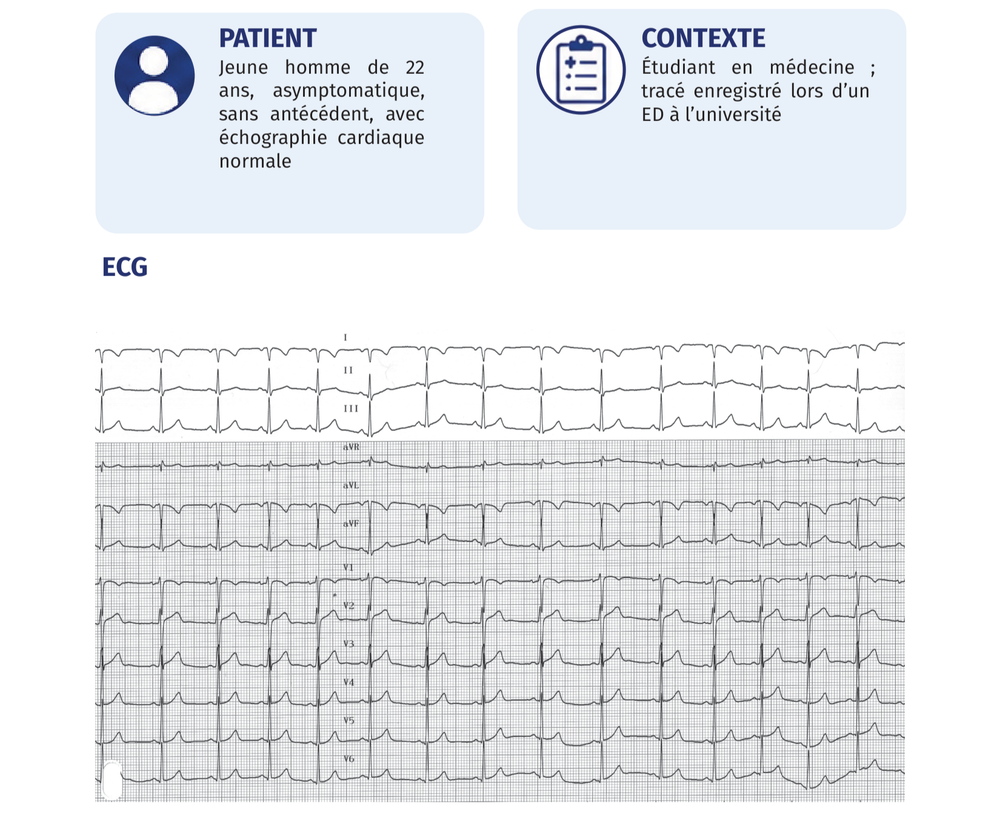
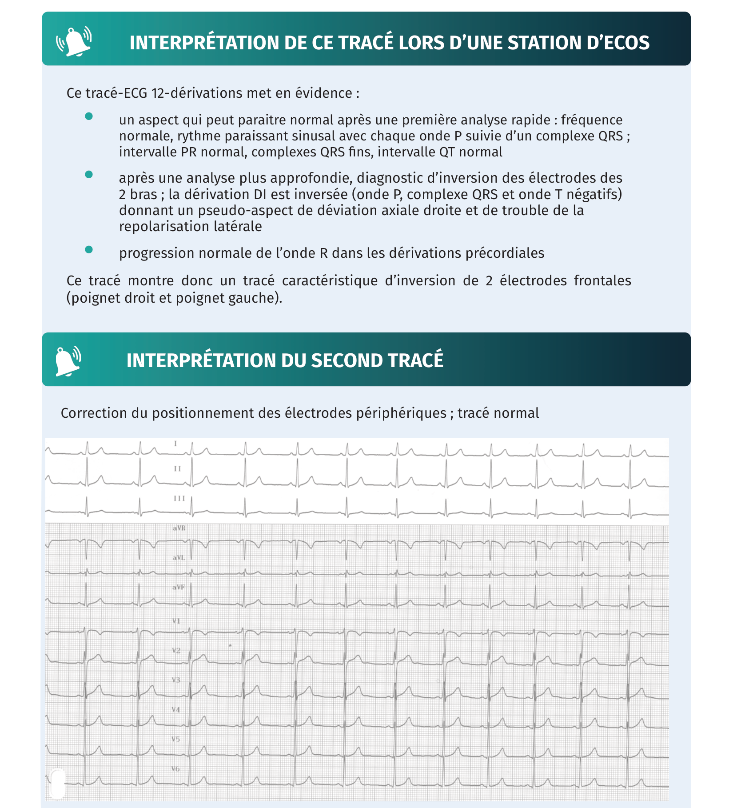
Jeune homme de 22 ans, asymptomatique, sans antécédent, avec échographie cardiaque normale — Étudiant en médecine ; tracé enregistré lors d’un ED à l’université
Le tracé peut sembler normal à première lecture : fréquence normale, rythme paraissant sinusal, PR normal, QRS fins et QT normal. L’anomalie clé est une dérivation DI complètement inversée, avec ondes P, QRS et T négatifs, traduisant une inversion des électrodes des deux bras. La progression de R en précordiales est normale, ce qui oriente vers une erreur technique plutôt qu’une pathologie cardiaque.
« « Ce tracé correspond à une inversion des électrodes des 2 bras ; l'aspect électrocardiographique est caractéristique » »
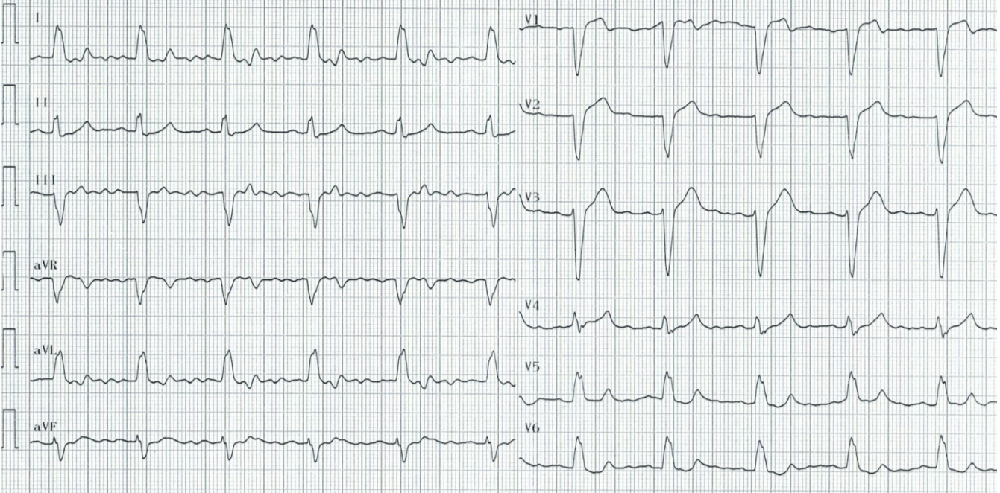
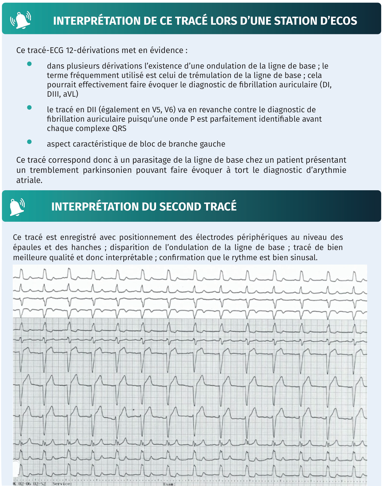
Homme de 63 ans, parkinsonien, avec myocardiopathie dilatée —
Le tracé montre une trémulation/ondulation de la ligne de base dans plusieurs dérivations, liée au tremblement parkinsonien, pouvant mimer une arythmie atriale. Le diagnostic de fibrillation auriculaire est écarté car une onde P sinusale est visible avant chaque QRS dans certaines dérivations et les QRS sont parfaitement réguliers. L’ECG associe donc un rythme sinusal, un parasitage de ligne de base et un aspect de bloc de branche gauche.
« « les complexes QRS étaient parfaitement réguliers rendant improbable le diagnostic de FA conduite » »
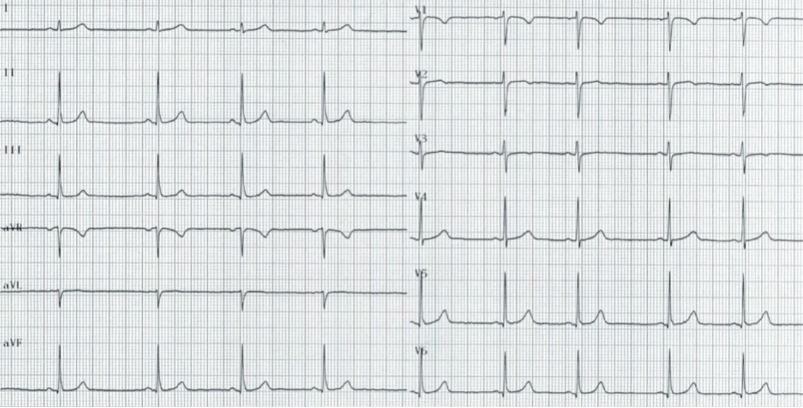
Femme de 23 ans sans antécédent particulier — Étudiante en médecine ; enregistrement de ce tracé lors d’un ED
Ce tracé illustre une analyse systématique d’un ECG en rythme sinusal normal. Tous les critères de normalité sont remplis : fréquence normale, conduction normale, axe et QRS normaux, absence d’hypertrophie, d’onde Q pathologique et de trouble de repolarisation, QT normal. Il faut savoir conclure à un ECG strictement normal.
« « Si tous les critères de normalité d’un ECG sont remplis […] il faut savoir affirmer qu’il est normal… » »
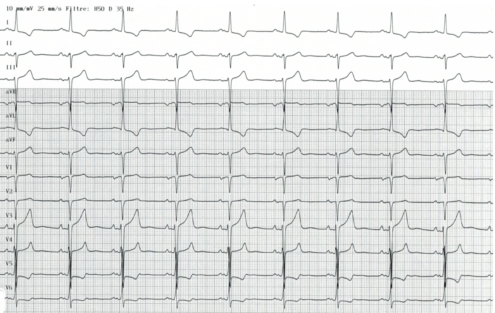
Homme de 57 ans avec myocardiopathie hypertrophique familiale — Visite de contrôle chez le cardiologue
Le tracé est en rythme sinusal et montre une hypertrophie auriculaire gauche typique. Le diagnostic repose sur une onde P élargie, crochetée/bifide dans plusieurs dérivations et une composante terminale négative élargie en V1. L’indice de Sokolow est négatif, tandis qu’il existe des ondes T négatives latérales, fréquentes dans la myocardiopathie hypertrophique.
« « Le diagnostic d'hypertrophie auriculaire gauche repose donc essentiellement sur la mise en évidence d’une onde P élargie avec une morphologie crochetée » »
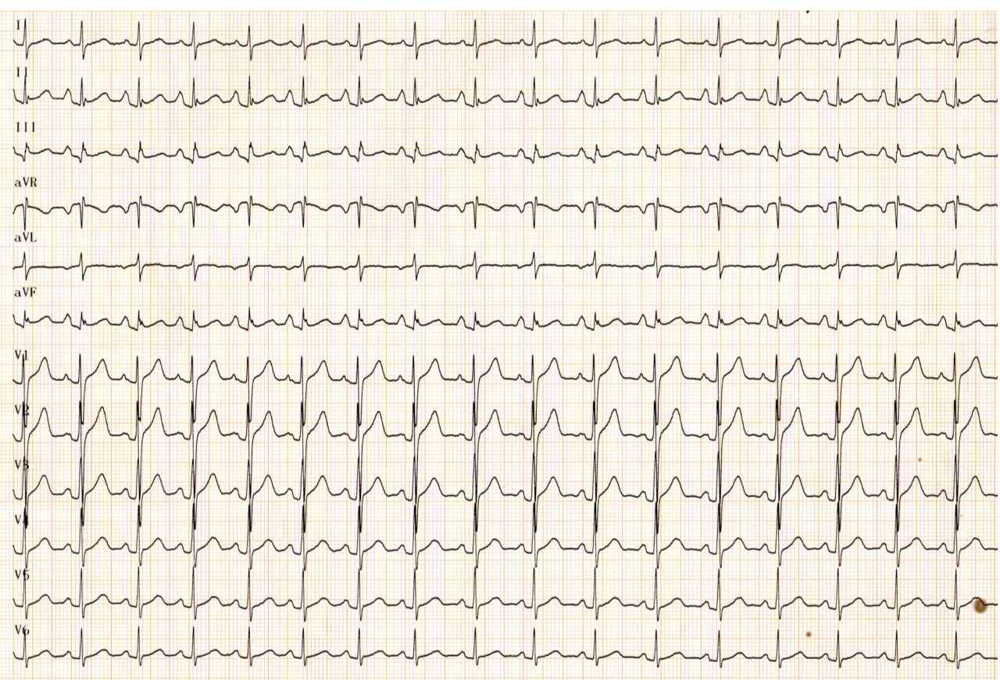
Femme de 40 ans, opérée à l’âge de 10 ans d’une communication inter-atriale ostium secundum — Visite de contrôle chez le cardiologue
L’ECG est en rythme sinusal et montre des critères d’hypertrophie auriculaire droite : onde P de durée le plus souvent normale mais ample, pointue, à 3 mm en DII, avec positivité exclusive en V1. Des ondes R amples en V1-V2 suggèrent une hypertrophie ventriculaire droite associée. Le diagnostic principal attendu est donc une hypertrophie auriculaire droite, et non une hypertrophie auriculaire gauche ou bi-auriculaire.
« « Le diagnostic d'hypertrophie auriculaire droite repose donc essentiellement sur la mise en évidence d’une onde P ample et dépassant 2.5 mm en DII » »
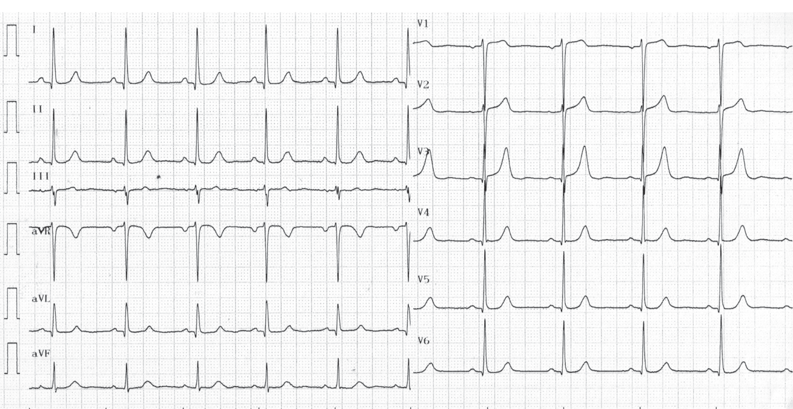
Homme de 34 ans, avec spondylarthrite ankylosante — Visite de contrôle chez le cardiologue
Le tracé montre un rythme sinusal avec critères électriques d’hypertrophie ventriculaire gauche : grands voltages, R augmentées en V5-V6 et S augmentées en V1-V2, indice de Sokolow autour de 43 mm donc positif. Les ondes T restent positives dans les précordiales gauches, ce qui correspond à l’aspect d’HVG « diastolique » attendu. Les propositions de bloc de branche gauche incomplet ou d’hémibloc ne doivent pas être retenues sur les éléments fournis.
« « Quand les ondes T restent positivent en V5-V6, on parle d’hypertrophie ventriculaire gauche diastolique. » »
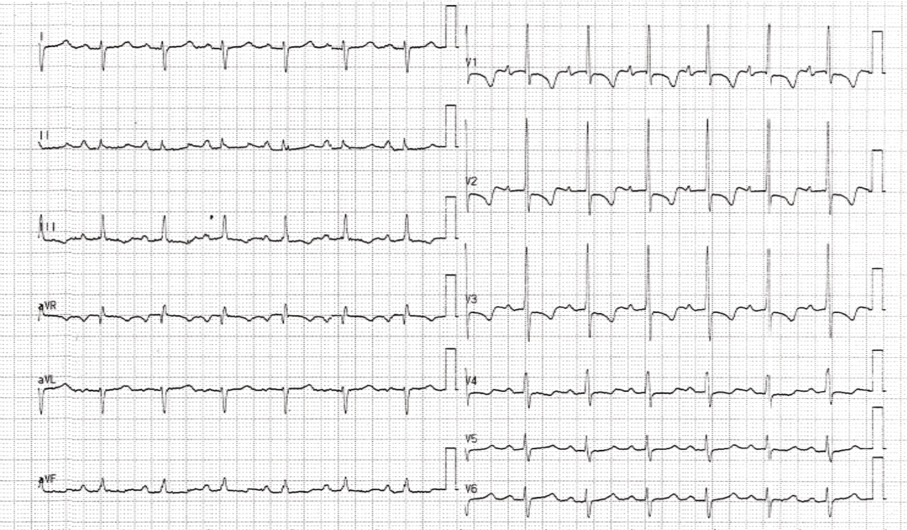
Femme de 57 ans présentant une hypertension artérielle pulmonaire primitive — Visite de contrôle chez le cardiologue
L’ECG montre un rythme sinusal avec BAV du 1er degré et QRS fins. Le diagnostic attendu est une hypertrophie ventriculaire droite, fondée sur la combinaison d’une déviation axiale droite à 130°, d’une prédominance de R en V1-V2 avec R/S > 1, et de troubles de repolarisation droits avec ondes T négatives de V1 à V4. Le texte rappelle que l’ECG a une sensibilité médiocre pour l’HVD et que le diagnostic de certitude repose plutôt sur l’échographie ou l’IRM.
« « Le diagnostic d’hypertrophie ventriculaire droite est basé sur la présence combinée de différents signes » »
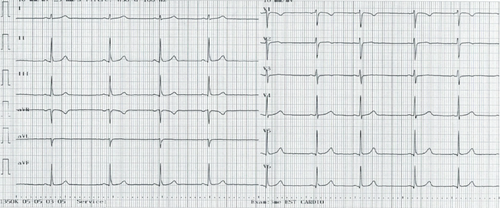
Jeune femme de 23 ans, asymptomatique, sans antécédent — ECG réalisé dans le cadre d’une visite de non contre-indication à la pratique du sport de compétition
Le tracé correspond à une activation ventriculaire normale chez une jeune femme asymptomatique. Le rythme est sinusal à environ 60/min, la conduction AV et le PR sont normaux, les QRS sont fins avec axe normal. Les aspects rS en V1 et qR en V6 sont normaux, avec petite q septale physiologique en V5-V6, sans trouble de repolarisation ni QT anormal.
« « l’aspect normal en V1 est donc rS [...] l’aspect normal en V6 est donc qR » »
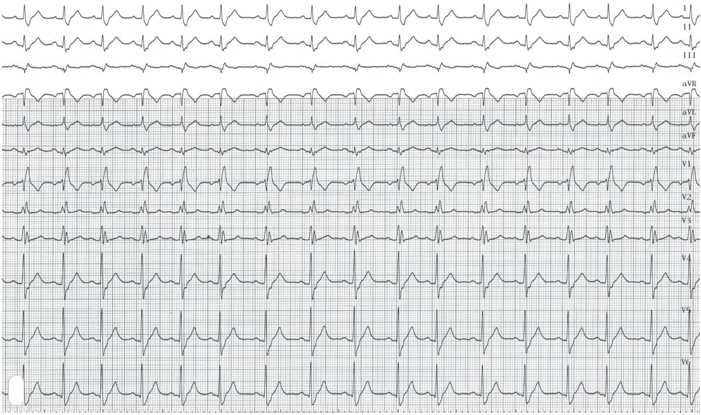
Homme de 24 ans, asymptomatique — ECG réalisé dans le cadre d’une visite de non contre-indication à la pratique du sport de compétition
ECG en rythme sinusal autour de 80/min avec conduction atrio-ventriculaire normale. Les QRS sont élargis à 130 ms, avec une morphologie typique de bloc de branche droite : rSR’ en V1 et qRS en V6 avec onde S terminale large et traînante. Axe normal, pas d’HVG, pas d’onde Q de nécrose, pas de trouble de repolarisation et QT normal.
« « on parle de bloc de branche droite complet si la durée des complexes QRS est supérieure à 120 ms » »
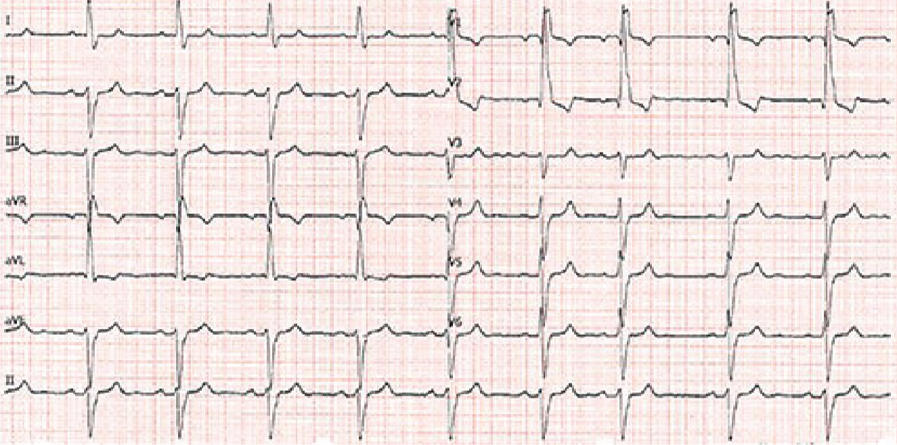
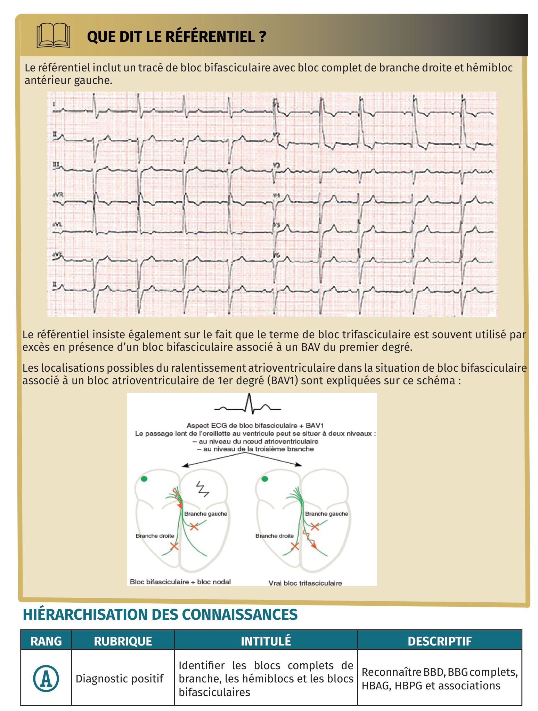
Homme de 74 ans hypertendu — Tracé enregistré lors d’une visite de contrôle chez son cardiologue
Le tracé montre un rythme sinusal autour de 65/min avec BAV du 1er degré. Les QRS sont larges avec aspect typique de bloc de branche droite complet, associé à une déviation axiale gauche compatible avec un hémibloc antérieur gauche. L’ensemble correspond à un bloc bifasciculaire associé à un BAV1, sans pouvoir affirmer un bloc trifasciculaire.
« « Il n’est pas possible d’affirmer sur ce tracé que le bloc est trifasciculaire. » »
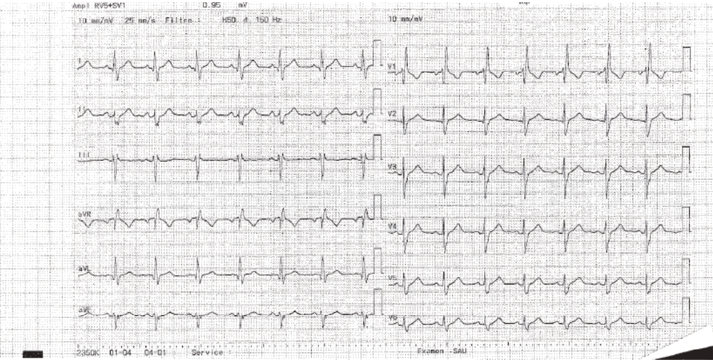
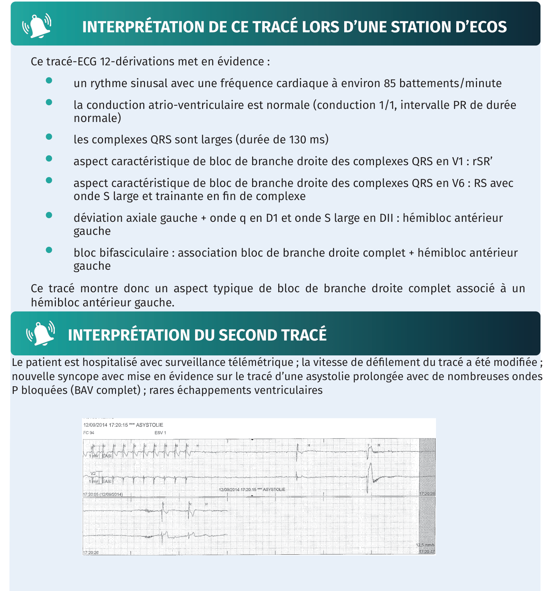
Homme de 83 ans avec insuffisance mitrale en attente de chirurgie — Le patient est hospitalisé avec surveillance télémétrique ; la vitesse de défilement du tracé a été modifiée ; nouvelle syncope avec mise en évidence sur le tracé d'une asystolie prolongée avec de nombreuses ondes P bloquées (BAV complet) ; rares échappements ventriculaires
L’ECG 12 dérivations montre un rythme sinusal autour de 85/min avec conduction AV 1/1 et PR normal. Les QRS sont larges à 130 ms avec aspect typique de bloc de branche droite complet, associé à une déviation axiale gauche compatible avec un hémibloc antérieur gauche. L’ensemble correspond à un bloc bifasciculaire, élément d’orientation majeur devant des syncopes car il expose à un BAV complet paroxystique.
« « syncope + bloc bifasciculaire = hospitalisation en cardiologie avec télémétrie ! » »
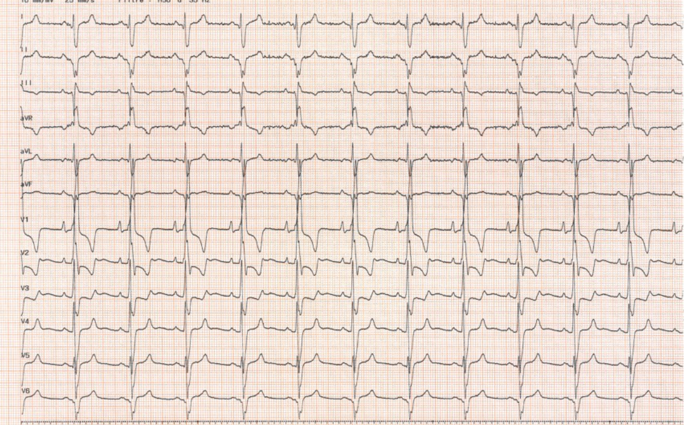
Homme de 64 ans, présentant un cœur pulmonaire chronique (antécédents d’embolie pulmonaire) — Tracé enregistré lors d’une visite de contrôle chez son cardiologue
Le tracé montre un rythme sinusal à environ 70/min avec conduction AV normale. Les QRS sont larges à 150 ms avec un bloc de branche droite complet, associé à une déviation axiale droite, une hypertrophie atriale droite et des critères d’hypertrophie ventriculaire droite. Les ondes T négatives en V1-V3 complètent le tableau de cœur pulmonaire chronique.
« « En présence d’un bloc de branche droite complet, les signes suivants sont évocateurs d’hypertrophie ventriculaire droite » »
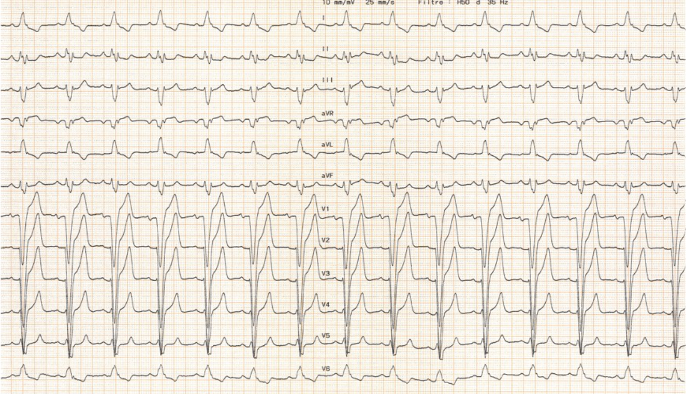
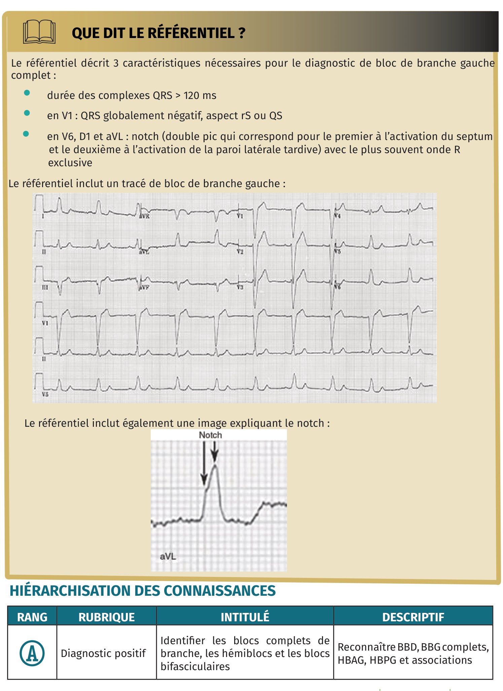
Homme de 68 ans avec myocardiopathie ischémique et fraction d'éjection altérée à 25% —
Le tracé montre un rythme sinusal à environ 75/min avec conduction AV normale. Les QRS sont larges à 150 ms, avec aspect typique de bloc de branche gauche complet : QRS négatifs en V1-V2 et onde R large en DI/V6. Les anomalies de repolarisation associées sont attendues dans le BBG : sous-décalage ST/T négative latérale et sus-décalage ST antérieur droit.
« Ce patient présente un aspect caractéristique de bloc de branche gauche complet. »
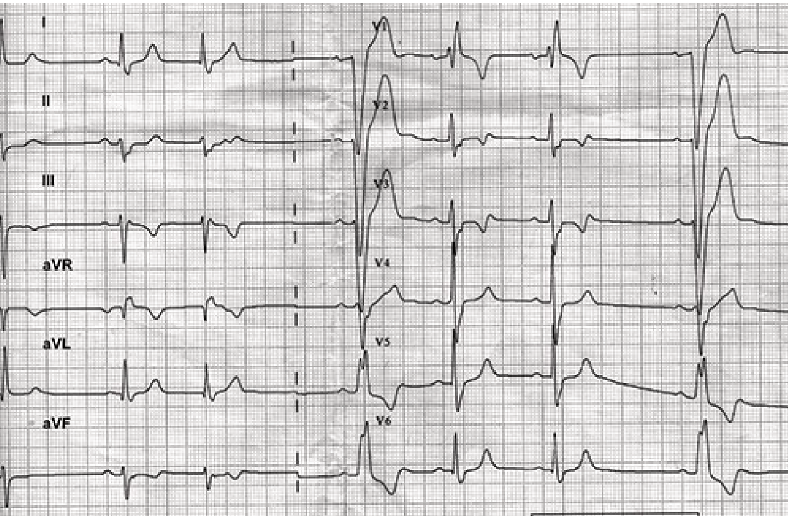
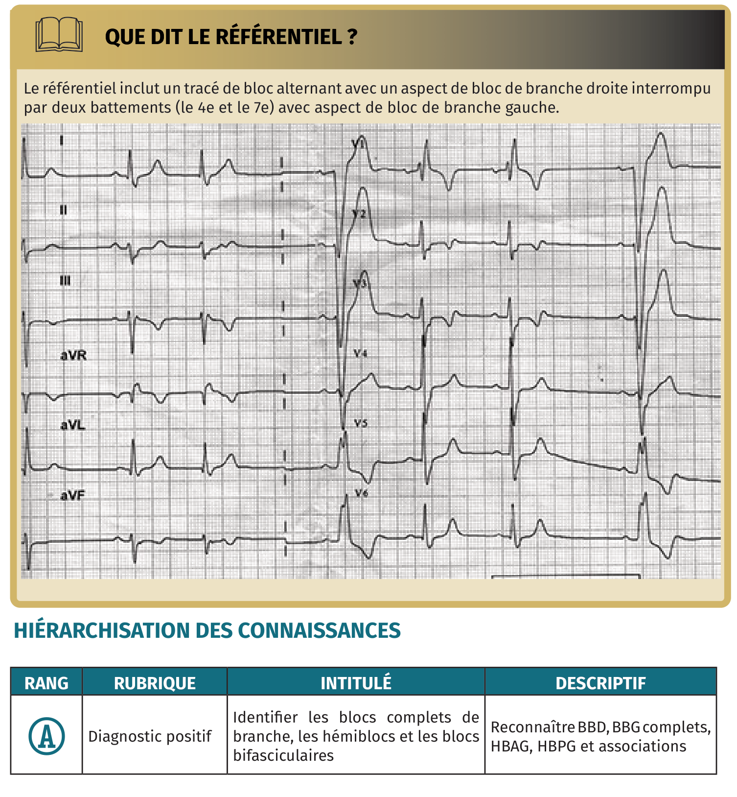
Homme de 78 ans ayant présenté plusieurs épisodes de syncope à l’emporte pièce —
Le tracé met en évidence une alternance de morphologies de bloc de branche complet : bloc de branche droite complet puis bloc de branche gauche complet. Cette alternance s’associe à des anomalies de conduction atrio-ventriculaire, avec PR allongé sur certains complexes et ondes P bloquées. Le diagnostic attendu est un bloc de branche alternant, très préoccupant chez un patient ayant des syncopes répétées.
« « L’électrocardiogramme est extrêmement préoccupant et nécessite une hospitalisation en urgence avec nécessité d’une stimulation temporaire. » »
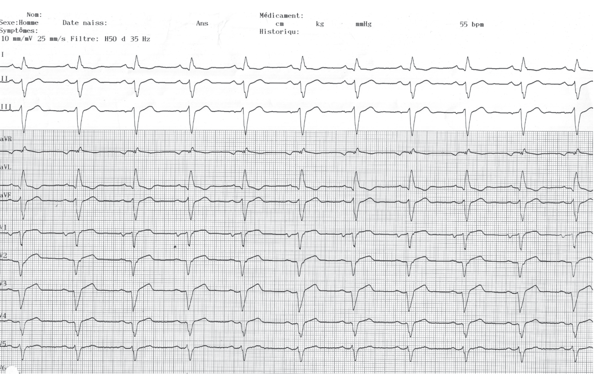
Homme de 74 ans présentant une insuffisance cardiaque sévère sur myocardiopathie ischémique —
Le tracé montre un rythme sinusal lent autour de 55/min avec conduction atrio-ventriculaire normale. Les QRS sont larges à 150 ms, mais sans critères de bloc de branche droit ni de bloc de branche gauche : il s’agit donc d’un bloc indifférencié. S’y associent un axe gauche, un rabotage des ondes R précordiales, des ondes T négatives en DI-aVL et une hypertrophie auriculaire gauche retenue dans le QCM.
« « diagnostic d'élimination en présence d'un QRS large (> 120 ms) mais ne présentant pas les caractéristiques d'un bloc de branche droite ou gauche » »
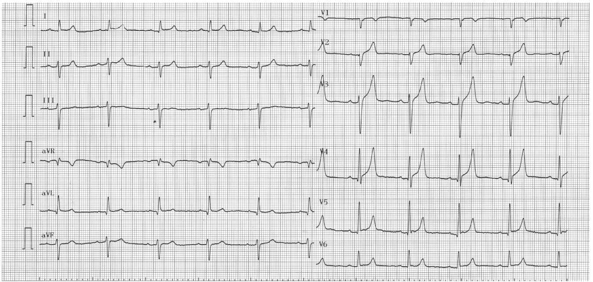
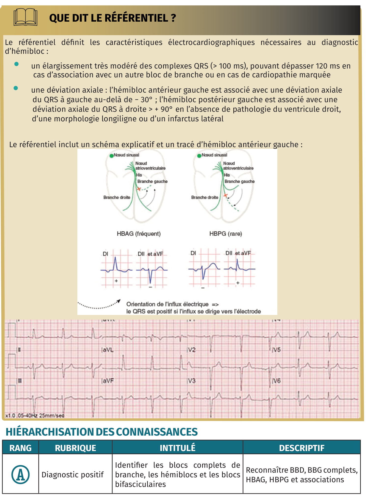
Homme de 24 ans, sans antécédent — ECG réalisé dans le cadre d’une visite de non contre-indication à la pratique du sport de compétition
Le tracé montre un rythme sinusal à environ 65/min avec conduction AV normale et QRS fins. L’élément déterminant est une déviation axiale gauche sur QRS fin, avec aspect rS dans les dérivations inférieures et qR en DI/aVL, compatible avec un hémibloc antérieur gauche. Il n’existe pas de trouble de repolarisation décrit.
« « La déviation axiale gauche sur un QRS fin [...] doit faire évoquer l'existence d’un hémibloc antérieur gauche » »
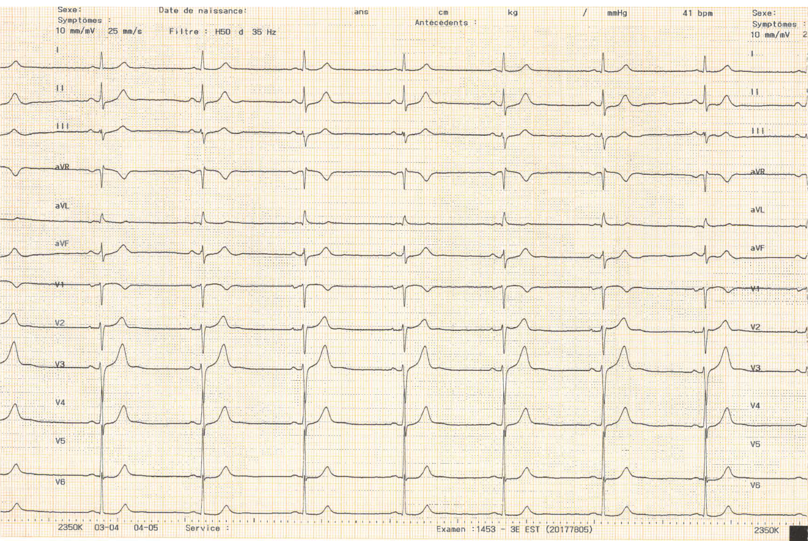
Homme de 47 ans, marathonien, sans antécédent cardiovasculaire — ECG réalisé dans le cadre d’une visite de non contre-indication à la pratique du sport de compétition
ECG d’un marathonien montrant un rythme sinusal lent, environ 40/min, correspondant à une bradycardie sinusale. La conduction AV est normale, les QRS sont fins d’axe normal, sans anomalie de repolarisation ni allongement du QT. Dans ce contexte de sportif d’endurance asymptomatique, il s’agit d’une bradycardie sinusale physiologique liée à l’hypertonie vagale, sans indication de traitement.
« « une hypertonie vagale fréquemment observée chez les patients sportifs peut expliquer une bradycardie physiologique » »
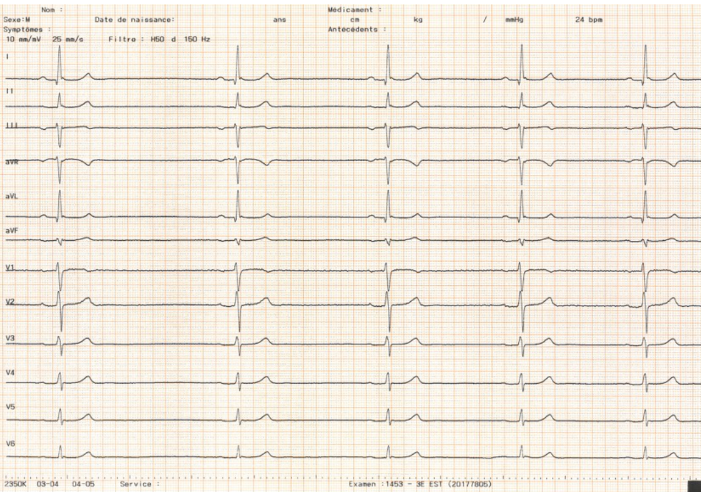
Homme de 77 ans, présentant une connectivite —
Le tracé montre une bradycardie sinusale très marquée, avec activité atriale sinusale clairement identifiable et fréquence autour de 20–30/min. Chaque onde P est suivie d’un QRS avec un PR normal : la conduction AV est préservée, sans argument pour un BAV. L’ensemble correspond à une dysfonction sinusale symptomatique.
« « Les ondes P sont très lentes (autour de 20 à 25 battements/minute ce qui conduit au diagnostic de dysfonction sinusale » »
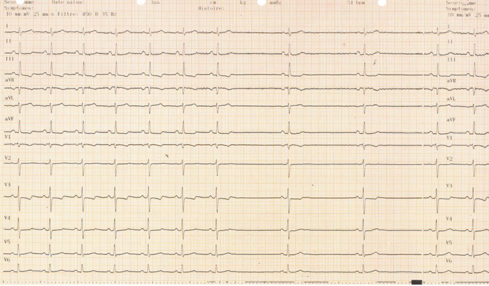
Femme de 74 ans, coronarienne stable — Mise en évidence d’une bradycardie à l’auscultation chez une patiente présentant une asthénie et enregistrement d’un tracé-ECG
Le tracé montre une activité atriale sinusale conservée, avec conduction atrio-ventriculaire normale, mais une bradycardie brutale par division de la fréquence cardiaque par deux. Cet aspect correspond à une dysfonction sinusale, en faveur d’un bloc sino-auriculaire du second degré, par blocage intermittent d’un influx sinusal. Il existe aussi des troubles de repolarisation à type d’ondes T négatives inférieures et antérieures, possiblement en rapport avec la coronaropathie.
« « le bloc sino-auriculaire du second degré […] explique une fréquence cardiaque subitement divisée par 2 » »
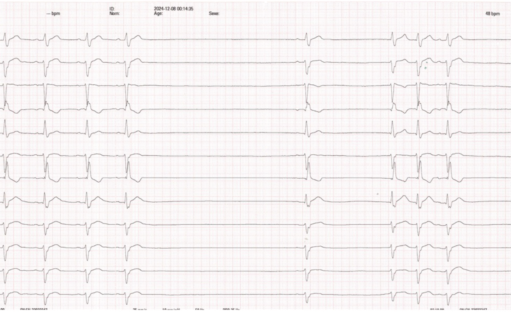
Homme de 83 ans, hypertendu, hospitalisé dans le cadre de lipothymies avec chutes répétées — Mise en évidence d’une pause lors de l’enregistrement de l’ECG d’entrée
Le tracé montre un rythme initial sinusal à environ 60/min, avec QRS larges de bloc de branche droite complet associé à un axe gauche, donc hémibloc antérieur gauche. La pause prolongée de 4–5 secondes se fait sans onde P visible ni onde P bloquée : il s’agit d’une pause sinusale, et non d’un BAV paroxystique. En fin de tracé, un échappement non précédé d’onde P est décrit.
« « l’absence de complexes QRS durant la pause s’explique par l’absence d’ondes P » »
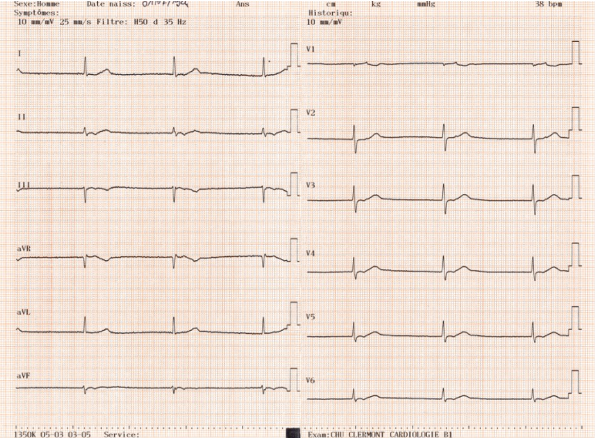
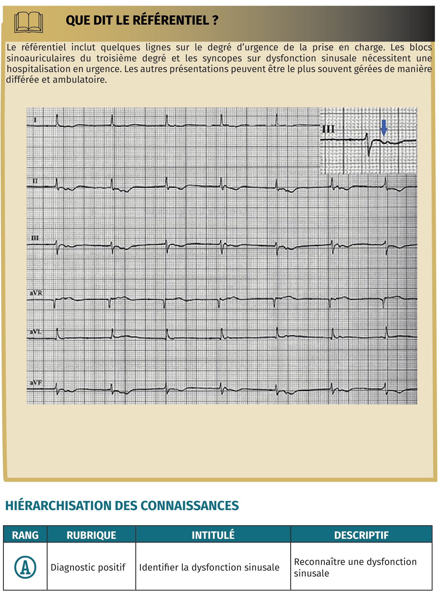
Homme de 72 ans, hypertendu —
Le tracé montre une bradycardie régulière à 30–40/min sans onde P sinusale visible, avec QRS fins réguliers non précédés d’onde P, correspondant à un échappement jonctionnel. Une activité atriale négative dans les dérivations inférieures, visible dans l’onde T, traduit une conduction atriale rétrograde. L’ensemble signe une dysfonction sinusale, possiblement par bloc sino-auriculaire du troisième degré ou défaut d’automatisme sinusal, sans intérêt clinique à distinguer ces mécanismes ici.
« « l’important étant de correctement porter le diagnostic de dysfonction sinusale » »
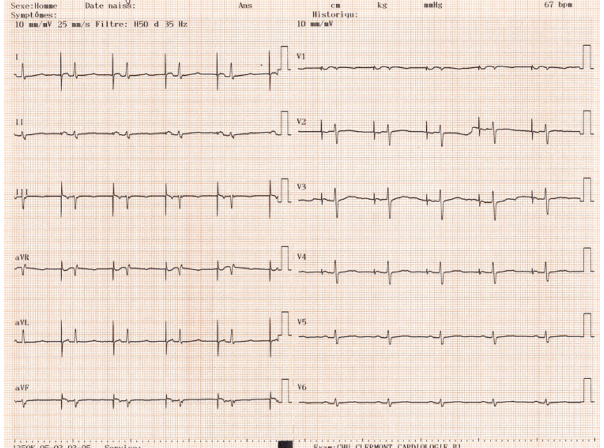
Homme de 68 ans implanté d’un stimulateur cardiaque dans le cadre d’une dysfonction sinusale — Enregistrement d’un tracé lors d’une consultation de contrôle
Le tracé montre des artéfacts de stimulation réguliers suivis d’une dépolarisation atriale : les activités atriales sont stimulées. Les QRS ne sont pas stimulés : ils sont fins, spontanés, après conduction auriculo-ventriculaire conservée. Il s’agit du fonctionnement attendu d’un stimulateur double chambre implanté pour dysfonction sinusale.
« « Les complexes QRS ne sont pas stimulés et sont spontanés. » »
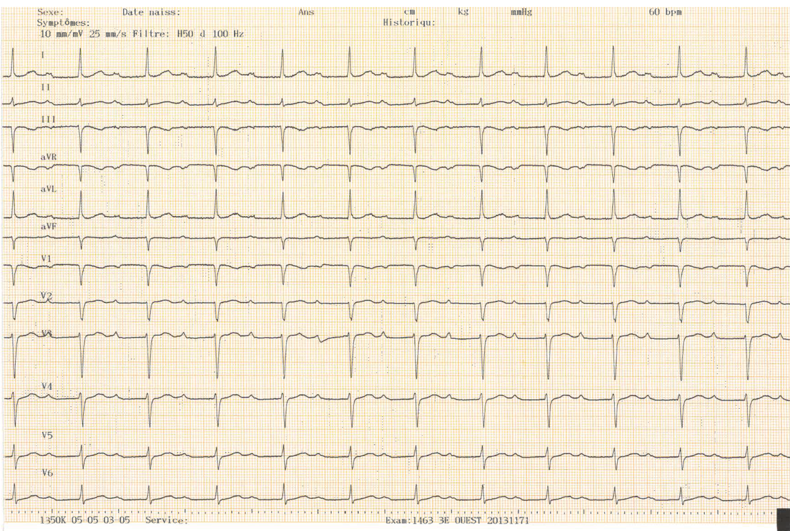
Homme de 77 ans, suivi pour rétrécissement aortique moyennement serré — ECG réalisé dans le cadre d’une visite de contrôle chez son cardiologue
Le tracé montre un rythme régulier sinusal à fréquence normale, autour de 60/min. L’élément central est un BAV du premier degré : chaque onde P est conduite avec un PR fixe, très allongé, supérieur à 200 ms, environ 500 ms. Les QRS sont fins, d’axe normal, sans trouble de repolarisation ni pré-excitation ; une hypertrophie auriculaire gauche est décrite.
« « chaque onde P est conduite) et un espace PR dépassant 200 ms » »
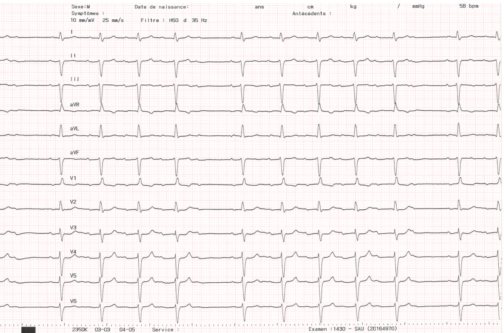
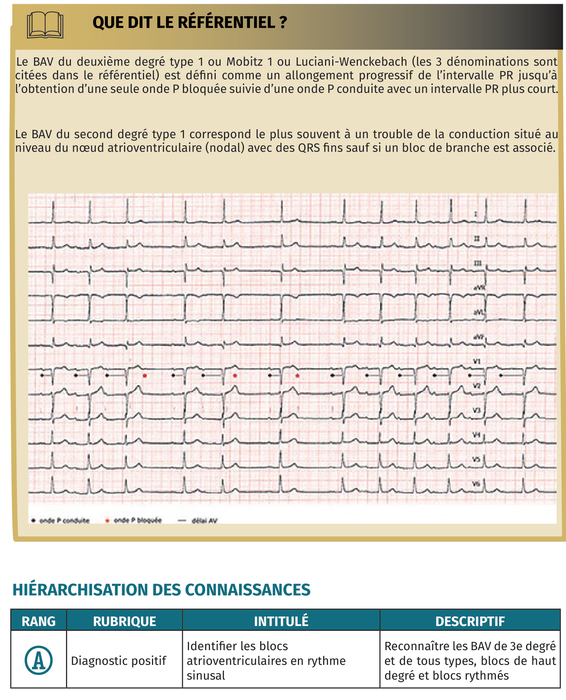
Homme de 82 ans, BPCO, hypertendu — ECG réalisé dans le cadre d’une visite de contrôle chez son cardiologue
Le tracé montre une activité atriale sinusale régulière avec rythme ventriculaire irrégulier autour de 60 bpm. La présence d’ondes P conduites et bloquées définit un BAV du second degré. L’allongement progressif du PR jusqu’à une onde P bloquée, puis un PR court à la reprise, identifie un BAV du second degré type 1, aussi appelé Mobitz 1 ou Luciani-Wenckebach. Un bloc incomplet droit avec axe gauche/hémibloc antérieur gauche est associé.
« « l’intervalle PR s’allonge progressivement puis une onde P est bloquée » »
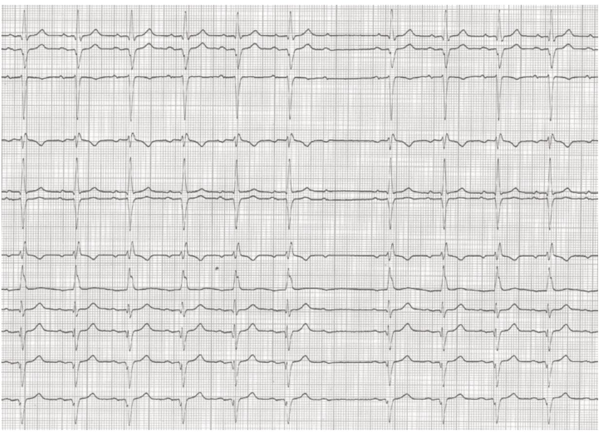
Homme de 81 ans avec antécédent d’infarctus antérieur étendu ancien — Hospitalisation pour 2 épisodes de syncope à l’emporte-pièce ; ECG enregistré à l’entrée aux urgences
ECG avec activité atriale sinusale régulière et rythme ventriculaire irrégulier par pause liée à une onde P bloquée. Les PR conduits restent constants avant et après la pause, sans allongement progressif : il s’agit d’un BAV du 2e degré type 2 (Mobitz 2). Les QRS sont larges avec bloc de branche droit complet et hémibloc antérieur gauche, suggérant un trouble infranodal à mauvais pronostic.
« « les ondes P bloquées non suivies de QRS surviennent inopinément, sans allongement préalable de l’espace PR » »
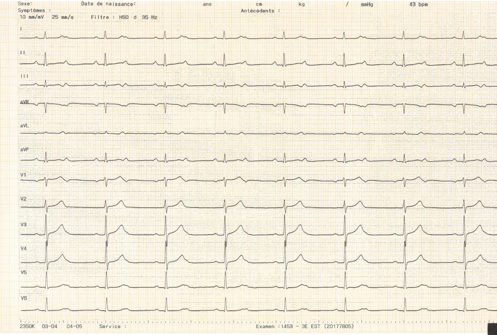
Homme de 84 ans sans antécédent qui consulte son médecin traitant pour asthénie ; mise en évidence d’une bradycardie —
Le tracé montre une bradycardie régulière à 43/min avec activité atriale sinusale. Une onde P sur deux est conduite et une onde P sur deux est bloquée, la P bloquée étant à rechercher en fin d’onde T : il s’agit d’un BAV 2/1. Les QRS sont fins, d’axe normal, sans trouble de repolarisation ni allongement du QT.
« « Toute la difficulté de ce tracé consiste à mettre en évidence l’onde P bloquée en fin d’onde T. » »
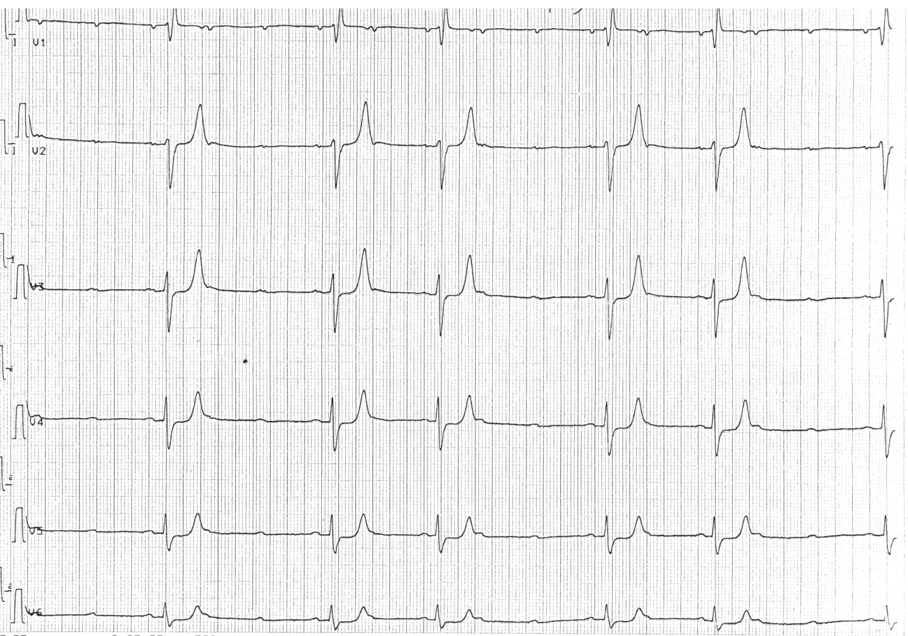
Homme de 79 ans dialysé pour insuffisance rénale chronique — Hospitalisation pour syncope
ECG de bradycardie irrégulière à environ 35 bpm avec activité atriale sinusale et plusieurs ondes P consécutives bloquées, définissant un BAV de haut degré. Les QRS sont larges avec aspect de bloc de branche droit complet. Les ondes T amples, fines/pointues et symétriques avec QT relativement court orientent vers une hyperkaliémie menaçante chez ce patient insuffisant rénal sévère.
« Ce tracé de BAV de haut degré (2 ondes P consécutives bloquées) survient dans le cadre d’une hyperkaliémie menaçante »
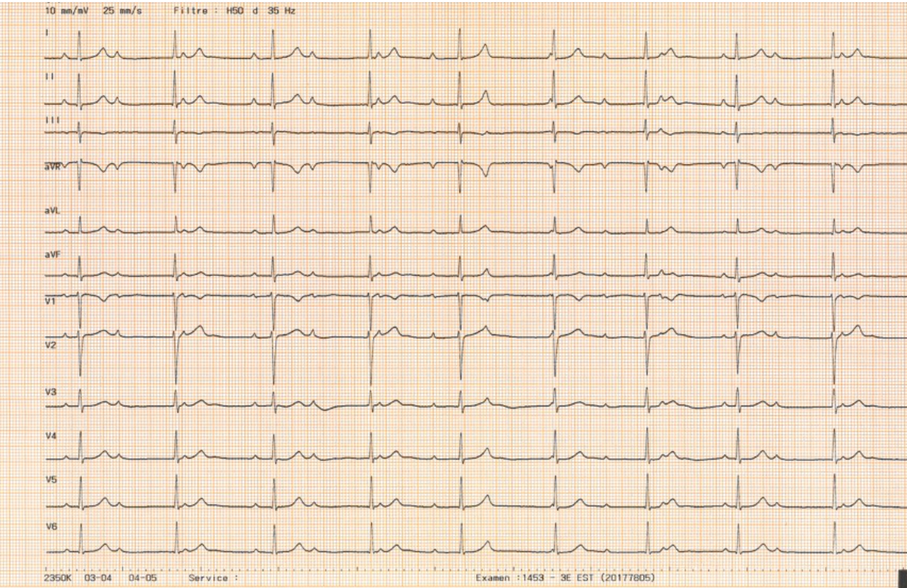
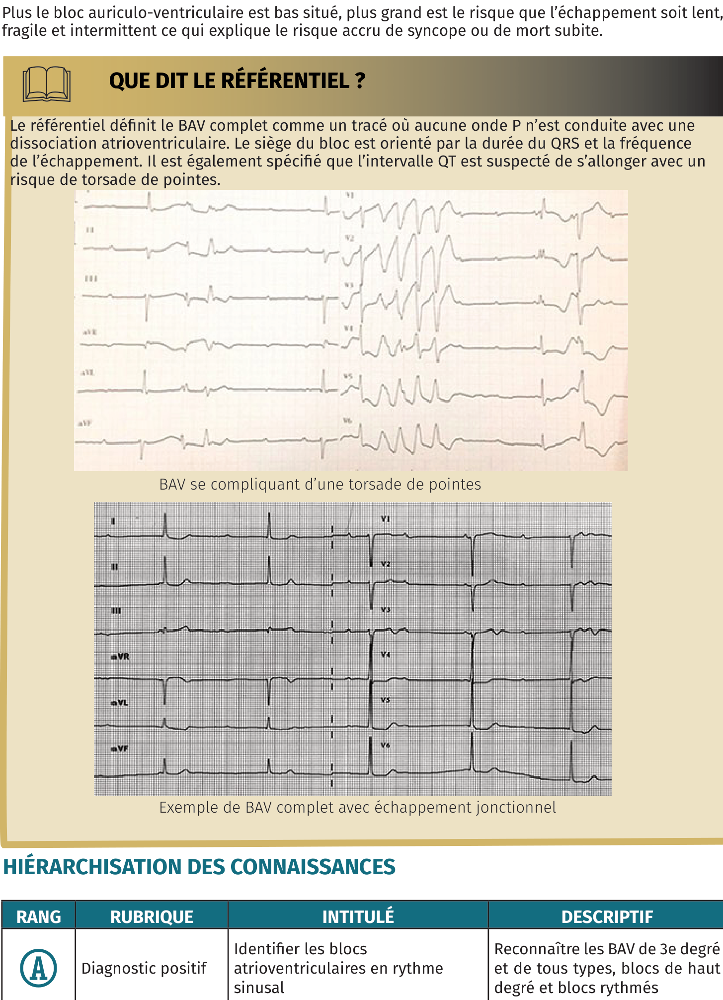
Homme de 83 ans avec rétrécissement aortique serré en attente de chirurgie cardiaque — Hospitalisation aux urgences pour syncope et enregistrement de ce tracé
Le tracé montre une activité atriale sinusale régulière et des QRS fins réguliers, mais totalement dissociés : aucune relation fixe P-QRS, avec PR variables. Il s’agit donc d’un BAV complet, avec échappement jonctionnel compte tenu des QRS fins et de la fréquence ventriculaire modérément ralentie autour de 53/min. Il n’y a pas d’anomalie de repolarisation ni d’allongement du QT sur ce tracé.
« « Il n’existe pas de relation entre les ondes P et les complexes QRS, les “intervalles PR” sont variables » »
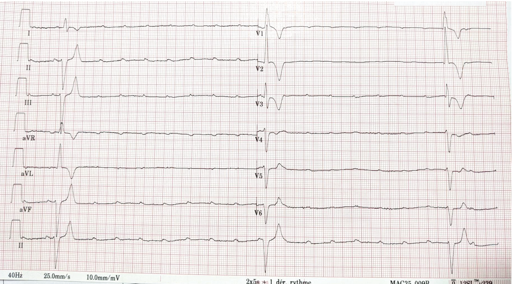
Homme de 85 ans, insuffisant rénal — Hospitalisation aux urgences pour syncope ; enregistrement de ce tracé avec un état hémodynamique instable (signes de choc)
Le tracé montre une bradycardie ventriculaire régulière très sévère, environ 20/min, avec une activité atriale sinusale régulière rapide autour de 110/min. L’absence de relation entre ondes P et QRS signe une dissociation atrioventriculaire complète : il s’agit d’un BAV III avec échappement probablement ventriculaire, large et très lent. Le contexte est celui d’une hyperkaliémie chez un insuffisant rénal, avec ondes T amples et fines, et il ne faut pas confondre la tachycardie sinusale réflexe avec un flutter atrial.
« « Ce tracé correspond à un bloc auriculoventriculaire complet survenant dans le cadre d’une hyperkaliémie » »
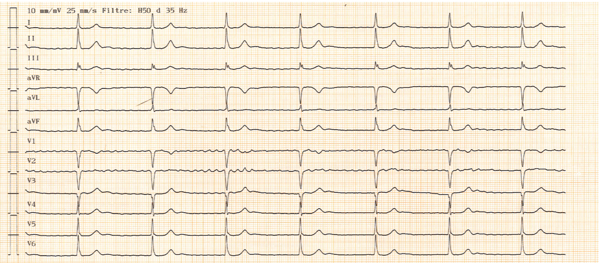
Homme de 87 ans — Hospitalisation aux urgences pour syncope et enregistrement de ce tracé
Le tracé montre une bradycardie ventriculaire régulière à 45 bpm alors que l’activité atriale est rapide, anarchique et polymorphe, compatible avec une fibrillation atriale. La régularité parfaite des QRS fins en contexte de FA signifie qu’ils ne sont pas conduits : il s’agit d’un échappement jonctionnel sur BAV complet. Conclusion attendue : FA avec bloc auriculo-ventriculaire complet, sans trouble de repolarisation et QT normal.
« « la fréquence ventriculaire peut être régulière et très ralentie [...] quand la conduction atrio-ventriculaire est interrompue » »
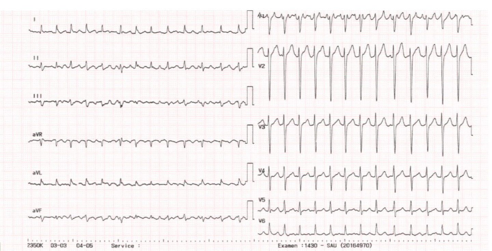
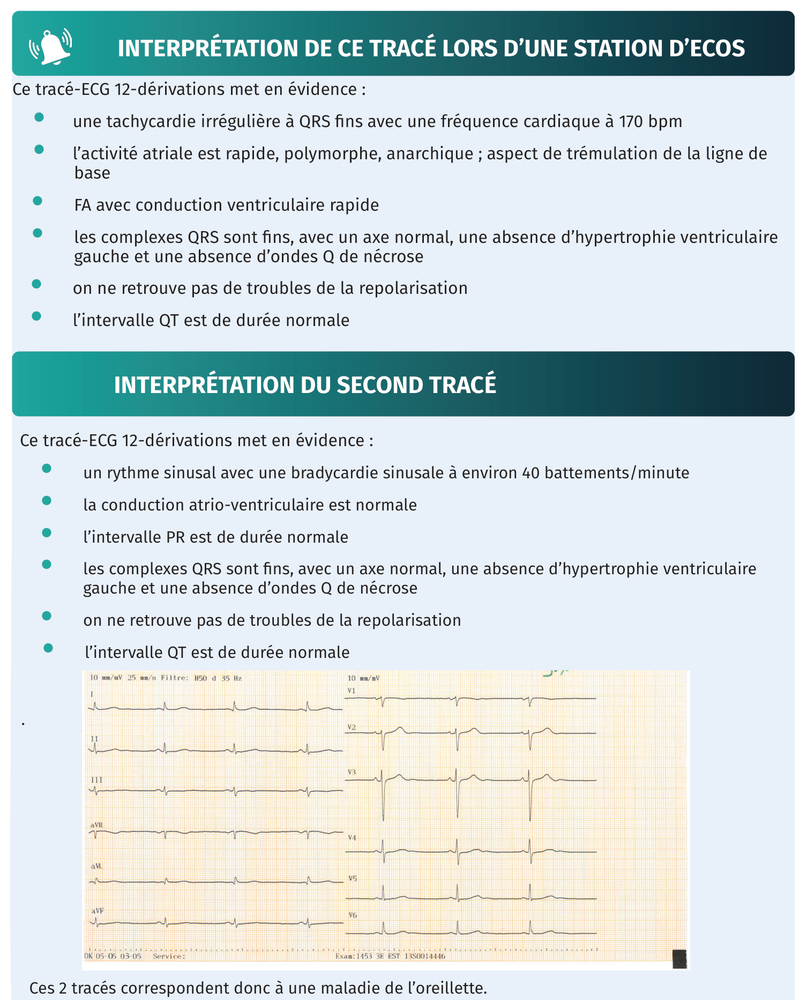
Homme de 72 ans, hypertendu —
Les deux ECG illustrent une maladie de l’oreillette : alternance d’une tachyarythmie atriale et d’une bradycardie sinusale. Le premier tracé montre une FA à conduction ventriculaire rapide, irrégulière, à QRS fins, autour de 170/min. Le second montre un rythme sinusal avec bradycardie sinusale autour de 40/min et conduction AV normale.
« « alternance entre des épisodes de tachycardie [...] et des épisodes de bradycardie en rapport avec une dysfonction sinusale » »
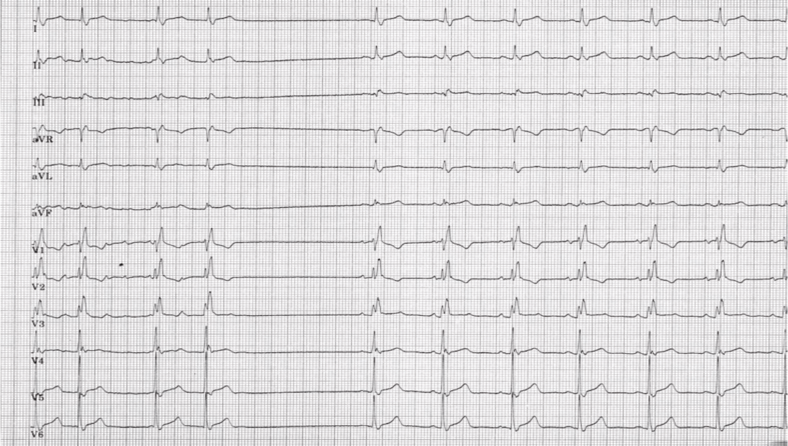
Homme de 74 ans présentant des syncopes répétées avec sensation de palpitations précédant la perte de connaissance — Enregistrement d’un tracé lors de la survenue de palpitations
Le tracé débute par une tachycardie supraventriculaire irrégulière à QRS larges correspondant à une fibrillation atriale conduite avec bloc de branche droite complet. L’arythmie se réduit pendant l’enregistrement et laisse place à une pause de plus de 2 secondes sans activité atriale identifiable, puis à la reprise d’un rythme sinusal. Il s’agit d’une pause sinusale post-réductionnelle, variante de maladie rythmique de l’oreillette expliquant les syncopes après palpitations.
« « épisodes de fibrillation auriculaire et pause survenant uniquement au moment de la réduction de l’arythmie » »
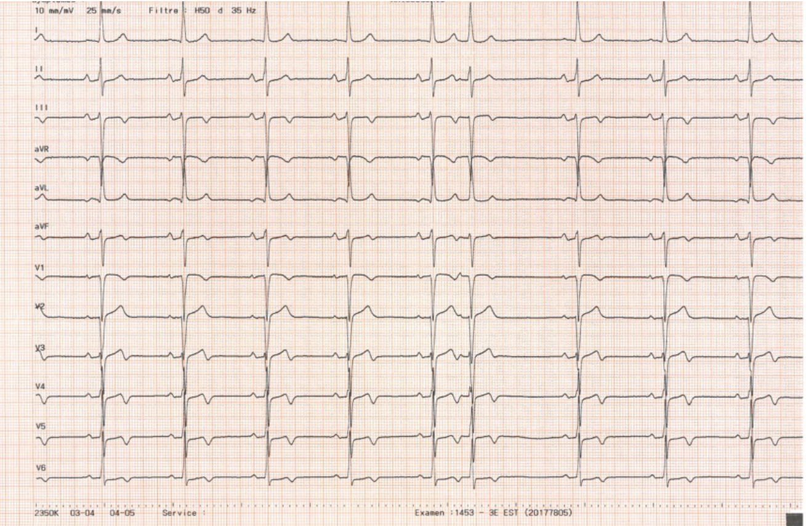
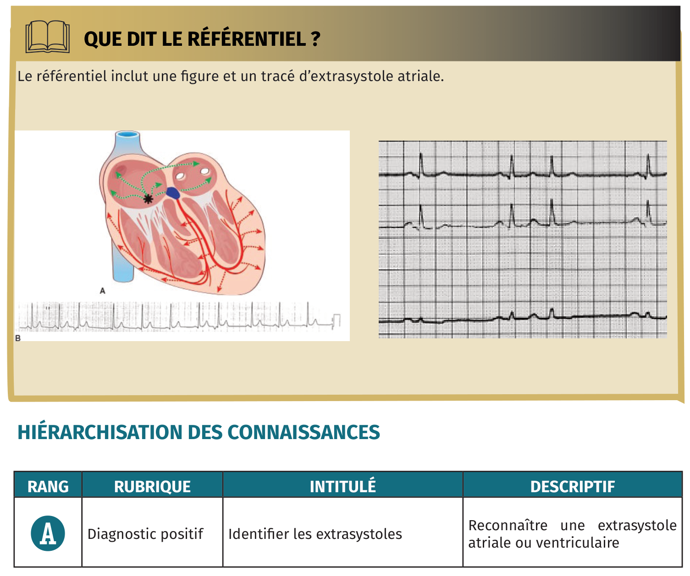
Homme de 67 ans avec antécédent de myocardiopathie ischémique — ECG enregistré dans le cadre d’un bilan de palpitations
Le tracé montre un rythme de base sinusal lent autour de 50/min avec un battement prématuré à QRS fin et identique aux complexes de base. L’activité atriale prématurée, visible notamment en V1 à la fin de l’onde T, permet de retenir une extrasystole atriale. Il existe également des troubles de la repolarisation avec ondes T négatives ou biphasiques en inférieur et de V3 à V6.
« « Le complexe QRS qui suit l'extrasystole est généralement fin et non modifié par rapport aux complexes de base. » »
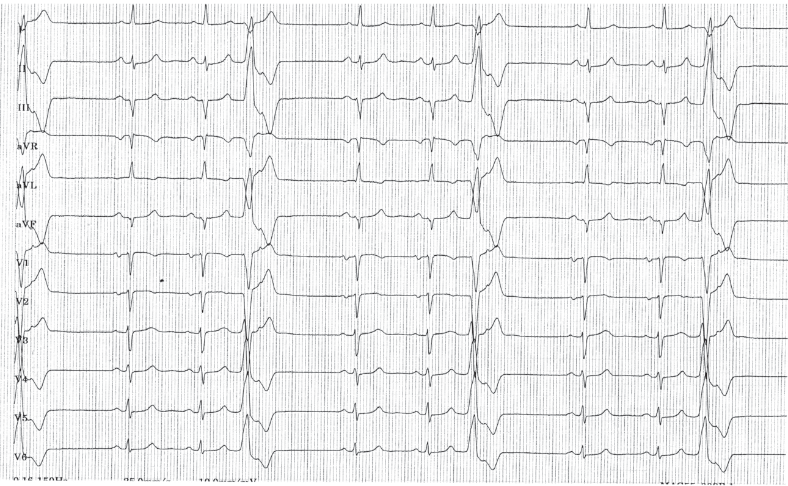
Femme de 37 ans ne présentant aucun antécédent — Consultation chez un cardiologue demandée par son médecin traitant à la suite de la mise en évidence d’une irrégularité du rythme cardiaque détectée à la prise du pouls
ECG en rythme de base sinusal avec conduction atrio-ventriculaire normale. Il existe des extrasystoles ventriculaires organisées en trigéminisme : répétition de deux battements sinusaux normaux suivis d’un complexe prématuré large non précédé d’activité atriale. Les complexes sinusaux sont fins, axe normal, sans HVG, sans onde Q de nécrose, sans trouble de repolarisation et avec QT normal.
« « Une extrasystole avec un complexe QRS fin ne peut pas être ventriculaire. » »
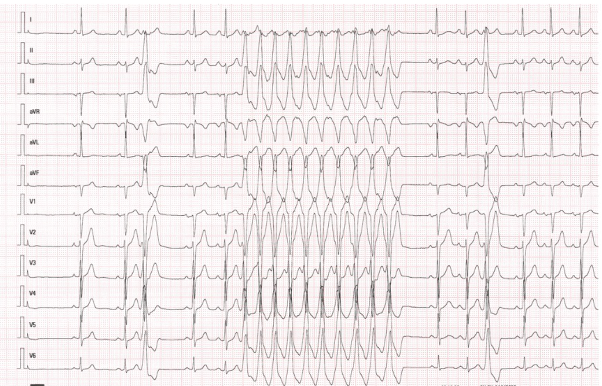
Homme de 74 ans, hypertendu — Consultation chez son cardiologue à la suite de la survenue de palpitations ; enregistrement d'un électrocardiogramme
Le tracé montre un rythme sinusal avec QRS fins et déviation axiale gauche, associé à des extrasystoles ventriculaires. L’anomalie principale est une salve de tachycardie à QRS larges monomorphes de 10 complexes, spontanément résolutive et durant moins de 30 secondes. Il s’agit donc d’une tachycardie ventriculaire non soutenue, et non d’une torsade de pointes ni d’une TV soutenue.
« « une salve de tachycardie à QRS larges et monomorphes » »
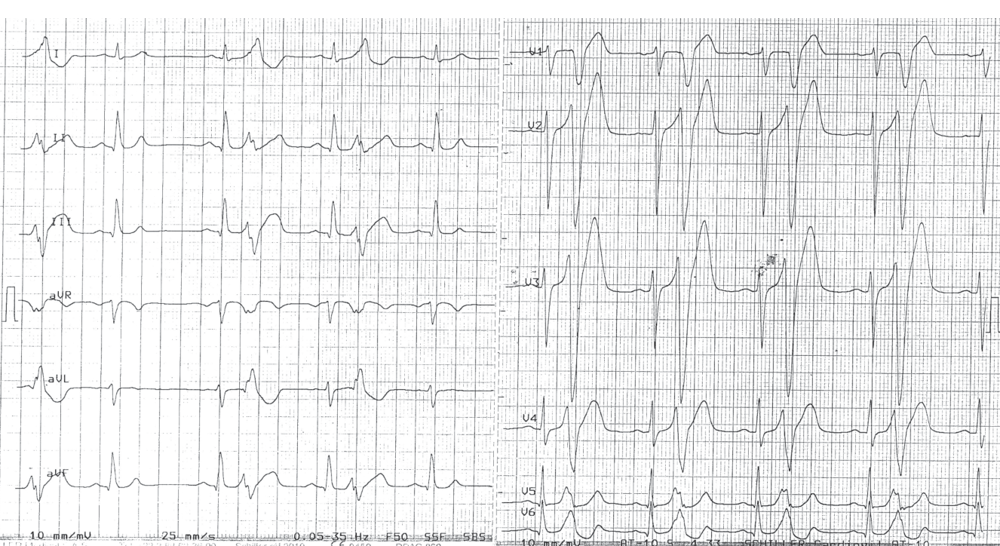
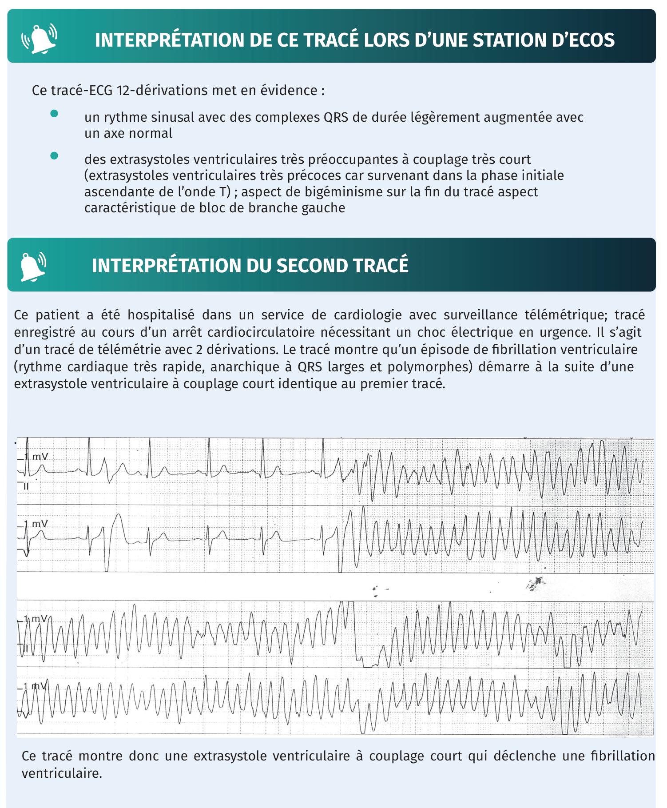
Homme de 48 ans, avec antécédent d'infarctus inférieur — Hospitalisation à la suite de la survenue de 2 épisodes de syncope traumatisante ; enregistrement de ce premier tracé à l’arrivée aux urgences
Le tracé montre un rythme sinusal avec QRS légèrement élargis et axe normal, associé à des extrasystoles ventriculaires très précoces. L’élément central est le couplage très court : l’ESV survient sur la phase ascendante de l’onde T précédente, correspondant à un phénomène R sur T. Ce caractère est un marqueur majeur de gravité, pouvant déclencher une fibrillation ventriculaire et exposer à un risque de mort subite.
« « L’existence d’un couplage court entre l’extrasystole ventriculaire et le complexe QRS précédent représente un indicateur majeur de risque rythmique. » »
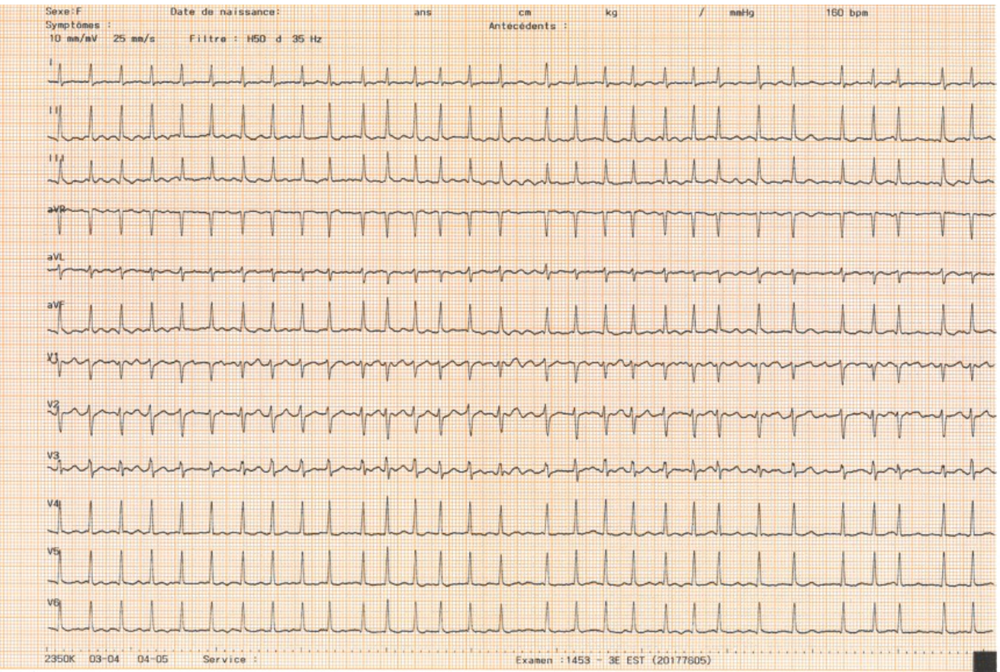
Homme de 67 ans, sans antécédent particulier — Consultation pour palpitations depuis quelques jours
Le tracé montre une tachycardie irrégulière à QRS fins, aux alentours de 160 bpm. L’absence d’ondes P sinusales organisées et la trémulation de la ligne de base orientent vers une fibrillation atriale. Les QRS sont fins, d’axe normal, sans signe d’HVG ni trouble de repolarisation décrit.
« « Le tracé de FA caractéristique à connaitre pour les EDN/ECOS est celui d’une tachycardie irrégulière à QRS fins. » »
Homme de 81 ans, hypertendu traité par bétabloquant — Consultation pour fatigue
Le tracé montre une bradycardie irrégulière à QRS fins autour de 40/min. L’absence d’ondes P organisées, remplacées par une activité atriale rapide, irrégulière et anarchique avec trémulation de la ligne de base, signe une fibrillation atriale. La lenteur de la réponse ventriculaire avec irrégularité persistante conduit au diagnostic de FA lente, et non de BAV complet.
« « Quand le rythme ventriculaire est lent et irrégulier, cela suggère que la conduction est altérée mais toujours présente » »
Adolescent de 17 ans sans antécédent, asymptomatique — Mise en évidence d’une irrégularité à la prise du pouls et à l’auscultation cardiaque ; enregistrement d’un tracé
Chez cet adolescent asymptomatique, le tracé montre un rythme à commande sinusale mais nettement irrégulier, avec accélérations et ralentissements périodiques compatibles avec les cycles respiratoires. Les ondes P sont normales, le PR est normal et le reste de l’ECG est dans les limites de la normale. Il s’agit d’une arythmie sinusale respiratoire physiologique, non pathologique.
« « Ces variations de fréquence suivant les cycles respiratoires [...] peuvent être considérées comme physiologiques. » »
Femme de 54 ans avec valvulopathie mitrale, insuffisance rénale chronique, anémie modérée — Hospitalisation pour décompensation cardiaque sur surinfection bronchique fébrile
Le tracé montre une tachycardie régulière à 170 bpm d’origine sinusale. Les ondes P sinusales précèdent les QRS avec un rapport oreillettes/ventricules 1/1, positives en DI, DII, V5, V6 et négatives en aVR. Dans ce contexte, il s’agit d’une tachycardie sinusale réactionnelle plutôt que d’un trouble du rythme par réentrée ou d’une arythmie atriale.
« « Les ondes P sinusales précèdent et commandent la survenue des complexes QRS. » »
Homme de 78 ans traité par flécaïnide et bétabloquant dans le cadre d'épisodes de FA paroxystique — Consultation pour palpitations et asthénie ressenties depuis quelques jours
ECG montrant un flutter atrial commun typique : activité atriale rapide, régulière et monomorphe, avec ondes F en dents de scie dans les dérivations inférieures. La conduction AV est principalement 4/1, donnant une fréquence ventriculaire proche de 75/min, avec QRS fins. Il s’agit d’un flutter de l’oreillette droite, antihoraire, passant par l’isthme cavo-tricuspide.
« « Le flutter atrial commun correspond à une macro-réentrée (large circuit) de l’oreillette droite. » »
Homme de 66 ans, obèse, BPCO — Consultation pour palpitations
Le tracé montre une tachycardie régulière à QRS fins autour de 170/min. La régularité rend la FA très improbable et les QRS fins rendent la TV très improbable. L’analyse et surtout le blocage AV transitoire sous striadyne démasquent une activité atriale organisée en dents de scie, compatible avec un flutter commun rapide, typiquement en conduction 2/1.
« « la cadence ventriculaire se situe entre 150 et 170 bpm, correspondant à une division par 2 de la fréquence des ondes F » »
Jeune homme de 31 ans présentant depuis plusieurs années des palpitations à début brutal et fin brutale — ECG enregistré au décours d'un épisode de tachycardie
Le tracé initial montre une tachycardie régulière non sinusale à QRS fins autour de 180/min, avec activité atriale difficile à individualiser. Les diagnostics initiaux possibles sont une tachycardie atriale organisée, notamment flutter commun, ou une tachycardie jonctionnelle ; la FA est très improbable car le rythme est parfaitement régulier et les QRS fins ne font pas retenir une TV. L’arrêt brutal par manœuvre vagale puis la découverte en rythme sinusal d’un PR court, d’une onde delta et de QRS larges conduisent au diagnostic de tachycardie jonctionnelle orthodromique sur voie accessoire, dans un syndrome de Wolff-Parkinson-White.
« « il s’agit d’une tachycardie régulière non sinusale à QRS fins » »
Jeune fille de 24 ans présentant des tachycardies fréquentes, régulières cédant spontanément après une trentaine de secondes — Enregistrement d’un tracé-ECG au décours d’un épisode de palpitations
Le tracé montre une tachycardie régulière à QRS fins à environ 200/min, chez une patiente jeune ayant des crises paroxystiques à début et fin brutaux. L’activité atriale est difficile à individualiser, probablement rétrograde en fin de QRS, ce qui oriente vers une tachycardie jonctionnelle. L’arrêt brutal sous isoptine avec reprise sinusale, sans pré-excitation, confirme une tachycardie jonctionnelle par réentrée intranodale.
« « durant la crise, la tachycardie est le plus souvent régulière à QRS fins » »
Homme de 78 ans avec antécédents d’embolie pulmonaire et cœur pulmonaire chronique — Hospitalisation pour palpitations ; enregistrement de l’électrocardiogramme au moment de la réalisation d’un massage sinocarotidien
Le début du tracé montre une tachycardie régulière à QRS larges monomorphes : les diagnostics initiaux à discuter sont une tachycardie ventriculaire ou une tachycardie supraventriculaire avec bloc de branche. La manœuvre vagale ralentit la conduction nodale et révèle une activité atriale rapide, organisée et régulière à 260/min. Le diagnostic final est un flutter atrial horaire de l’oreillette droite, initialement conduit en 2/1, avec bloc de branche droit et hémibloc antérieur gauche.
« « les 2 diagnostics à évoquer sont donc ceux de tachycardie ventriculaire ou de tachycardie supraventriculaire avec bloc de branche. » »
Homme de 63 ans avec nombreux facteurs de risque hospitalisé pour palpitations — ECG enregistré lors d'un épisode de tachycardie bien supportée sur le plan hémodynamique
Le tracé initial montre une tachycardie régulière à QRS larges, monomorphe, avec activité atriale difficile à voir. Les diagnostics à retenir devant ce tracé sont tachycardie ventriculaire ou tachycardie antidromique sur voie accessoire ; la régularité exclut une FA et le caractère monomorphe exclut torsade de pointes et fibrillation ventriculaire. Le second tracé documente une voie accessoire avec pré-excitation en rythme sinusal, soutenant le diagnostic de tachycardie antidromique dans un syndrome de Wolff–Parkinson–White.
« « tachycardie antidromique avec QRS larges et aspect majeur de pré-excitation » »
Homme de 64 ans avec infarctus du myocarde inférieur il y a 8 ans ; fraction d'éjection à 45% — Sensation de palpitations avec lipothymie ; ECG enregistré à l'entrée aux urgences
Le tracé montre une tachycardie régulière à QRS larges monomorphes, avec activité atriale difficile à identifier. Chez un patient ayant un antécédent d’infarctus du myocarde et une lipothymie, le diagnostic le plus probable est une tachycardie ventriculaire. L’absence d’activité atriale dissociée clairement visible ou de complexes de capture/fusion n’exclut pas la TV dans ce contexte.
« « toute tachycardie régulière à QRS larges est une tachycardie ventriculaire jusqu’à preuve du contraire » »
Homme de 63 ans — Consultation pour palpitations
Le tracé montre une tachycardie régulière à QRS larges à 106 bpm. Le diagnostic de tachycardie ventriculaire est certifié par la dissociation auriculo-ventriculaire avec activité atriale sinusale indépendante, et par la présence d’un complexe de capture : le 3e QRS est fin après une onde P sinusale. Les alternatives d’une tachycardie supraventriculaire avec bloc de branche ou antidromique sont à connaître, mais écartées par ces deux signes.
« « On observe parfois comme sur ce tracé, une dissociation auriculo-ventriculaire avec activité atriale sinusale ce qui permet de certifier le diagnostic de TV. » »
Homme de 79 ans avec hypertension artérielle traitée — Consultation pour palpitations depuis quelques jours ECG enregistré après réalisation d'un choc électrique programmé : rythme sinusal avec hypertrophie auriculaire gauche (onde P de durée allongée (>120 ms), bifide en DI, DII et aVL) ; bloc de branche droite complet avec aspect des complexes QRS identique à celui observé en tachycardie.
Le tracé montre une tachycardie très irrégulière à QRS larges monomorphes. L’activité atriale rapide, irrégulière et anarchique avec trémulation de la ligne de base fait retenir une fibrillation atriale. Les QRS larges ont une morphologie de bloc de branche droite complet, expliquant la tachycardie supraventriculaire à QRS larges.
« « Devant une tachycardie très irrégulière, le premier diagnostic à évoquer est celui de fibrillation atriale même si les complexes QRS sont larges » »
Homme de 61 ans avec facteurs de risque (tabagisme actif et dyslipidémie) ayant présenté un syndrome coronarien aigu antérieur avec angioplastie et pose de stent sur l'artère coronaire inter-ventriculaire antérieure 12 heures après le début des symptômes (revascularisation tardive) ; altération sévère de la fraction d'éjection ventriculaire gauche — 10 jours après cet épisode, surveillance télémétrique et mise en évidence de troubles du rythme
Le tracé s’inscrit dans un post-infarctus antérieur étendu reperfusé tardivement avec FEVG sévèrement altérée. Il associe un rythme sinusal, des séquelles de nécrose antérieure étendue avec ondes Q également inférieures, un sus-décalage ST persistant, et des extrasystoles ventriculaires très précoces tombant sur l’onde T. Ces ESV déclenchent ensuite une tachycardie ventriculaire polymorphe puis une fibrillation ventriculaire, rythmologie anarchique à QRS larges nécessitant un choc électrique.
« « Le choc électrique est le seul traitement permettant de rétablir une activité électrique cardiaque viable. » »
Homme de 75 ans, présentant une cardiopathie ischémique stable (triple pontage il y a 10 ans) ; fraction d’éjection altérée à 40% — Hospitalisation pour plusieurs syncopes vulnérantes depuis 24 heures ; contexte de diarrhées aiguës depuis 4 jours ; traitement par macrolide et antihistaminique ; ECG enregistré pendant un épisode de lipothymie, sans réelle perte de connaissance
Le tracé montre un complexe sinusal avec QT extrêmement allongé, suivi d’extrasystoles ventriculaires puis d’une tachycardie rapide polymorphe à QRS larges. Les QRS changent progressivement d’axe avec un aspect de torsion autour de la ligne isoélectrique, et l’épisode se réduit spontanément en quelques secondes. Le diagnostic attendu est une torsade de pointes sur allongement majeur du QT, favorisée ici par diarrhées/hypokaliémie possible et médicaments allongeant le QT.
« « pas de QT long, pas de torsade » »
Jeune homme de 17 ans sans antécédent particulier ayant présenté une mort subite récupérée lors d'un match de football (choc électrique délivré à l'aide d'un défibrillateur externe semi-automatique) ; patient adressé dans le service ; un aspect de voie accessoire est mis en évidence — Une exploration électrophysiologique est réalisée pour réaliser une ablation de la voie accessoire Sur la deuxième partie du tracé, le rythme dégénère en fibrillation ventriculaire (activité ventriculaire, très rapide, chaotique, anarchique) ; perte de connaissance du patient ; un choc électrique est alors nécessaire pour rétablir un rythme sinusal efficace.
Le tracé correspond à une fibrillation auriculaire conduite rapidement par une voie accessoire chez un patient avec syndrome de Wolff-Parkinson-White. L’ECG montre une tachycardie irrégulière à QRS larges polymorphes, très rapide, avec aspect variable des QRS en « accordéon ». Cette situation est à haut risque de dégénérescence en fibrillation ventriculaire et de mort subite.
« « un épisode de fibrillation atriale sur voie accessoire se traduit par une tachycardie irrégulière à QRS larges, polymorphes » »
Femme de 76 ans —
Le tracé montre une tachycardie sinusale avec PR normal, QRS limite à 100 ms et aspect de retard droit. L’association S1Q3 avec onde T négative en DIII réalise un aspect S1Q3T3, évocateur d’embolie pulmonaire, sans signe ECG de SCA ST+. Le texte rappelle que l’ECG est peu performant pour diagnostiquer l’EP : les signes sont aspécifiques, inconstants et un ECG normal ne l’exclut jamais.
« « Un aspect normal ne doit donc jamais exclure le diagnostic d'embolie pulmonaire. » »
Homme de 57 ans —
L’ECG montre des signes de cœur pulmonaire aigu : bloc de branche droite complet, aspect S1q3T3 et ondes T négatives en V1-V3. Dans le contexte clinique, ces anomalies orientent vers une embolie pulmonaire massive compliquée de choc obstructif. Le bloc de branche droite complet est un signe de gravité lié à la surcharge brutale du ventricule droit.
« « L'apparition d'un bloc de branche droite complet est donc rare lors de la survenue d'une embolie pulmonaire, représente un signe de gravité » »
Jeune homme de 21 ans, sans antécédent ou facteur de risque cardiovasculaire —
ECG en rythme sinusal montrant un aspect typique de péricardite aiguë : sous-décalage diffus du PQ et sus-décalage diffus du ST concave vers le haut, avec ondes T positives. Le miroir est limité à aVR et V1. Les variations d’amplitude des QRS dans les dérivations périphériques évoquent un épanchement péricardique associé.
« « Quelques éléments électrocardiographiques sont évocateurs d'une péricardite : sous-décalage du segment PQ associé » »
Homme de 78 ans ayant bénéficié de la pose d'un défibrillateur implantable en prévention primaire d'une myocardiopathie dilatée avec fraction d'éjection à 25% — 15 jours après la procédure, hospitalisation en urgence pour dyspnée et baisse de la pression artérielle
L’ECG montre une tachycardie sinusale associée à un microvoltage diffus des complexes QRS. Il existe une alternance électrique des QRS, bien visible en précordiales notamment V3-V4. Dans ce contexte, l’association microvoltage + alternance électrique évoque un épanchement péricardique abondant, possiblement compliqué de tamponnade.
« « Une alternance électrique peut également être observée chez un patient avec épanchement péricardique abondant » »
Homme de 35 ans —
Le tracé montre un rythme sinusal avec QRS fins, petites ondes q inférieures et sus-décalage ST inférieur modéré sans miroir. Dans le contexte d’un patient jeune avec épisode viral récent, douleur thoracique et troponine élevée, l’ensemble évoque une myocardite. Le principal piège est de conclure trop vite à un SCA ST+ : la myocardite peut mimer un syndrome coronarien et nécessite souvent une coronarographie si le doute persiste.
« « Le diagnostic différentiel principal de myocardite est celui de SCA ST+. » »
Homme de 54 ans avec de nombreux facteurs de risque —
ECG en rythme sinusal montrant un sus-décalage du ST de V1 à V4, également en DI, aVL et aVR, avec aspect d’onde de Pardee. Il existe un sous-décalage en miroir dans les dérivations inférieures et en V6. Le diagnostic attendu est un SCA ST+ aigu antéro-septo-apical, correspondant ici à une occlusion proximale de l’IVA.
« « sus-décalage convexe vers le haut, en dôme, parfois très ample [...], englobant l'onde T » »
Homme de 56 ans, hypertendu, tabagique —
ECG en rythme sinusal montrant un sus-décalage ST systématisé dans le territoire inférieur, en DII, DIII et aVF, avec aspect d’onde de Pardee. Il existe des ondes q inférieures et un sous-décalage en miroir en aVL et V2. Le diagnostic attendu est un syndrome coronarien aigu ST+ inférieur, relevant d’une coronarographie urgente.
« « aspect caractéristique de sus-décalage systématisé en DII, DIII et aVF » »
Homme de 67 ans, hypertendu, fumeur actif —
Le tracé montre un SCA ST+ inférieur aigu : sus-décalage ST inférieur en onde de Pardee avec miroir en DI-aVL et ondes q inférieures. L’absence d’ondes P traduit une dysfonction sinusale avec échappement à QRS modérément élargis et probable conduction atriale rétrograde. Les dérivations droites V3R-V4R objectivent un sus-décalage significatif avec ondes q profondes, en faveur d’une extension au ventricule droit.
« « l'anomalie électrocardiographique caractérisant une extension au ventricule droit est l'existence d'un sus-décalage > 1 mm » »
Homme de 74 ans, hypertendu —
Le tracé correspond à un SCA ST+ inférieur aigu, avec sous-décalage miroir en DI-aVL et V1-V2. Les éléments fournis imposent l’enregistrement d’un ECG 18 dérivations, qui met en évidence une extension au ventricule droit en V3R-V4R et à la paroi postérieure en V7-V9. Une bradycardie à QRS fins avec activité atriale difficile à analyser fait suspecter un trouble de conduction atrio-ventriculaire.
« « L'enregistrement des dérivations précordiales droites et postérieures est indispensable chez un patient présentant un infarctus inférieur » »
Homme de 67 ans, fumeur sans antécédent cardiovasculaire significatif —
Le tracé montre un rythme sinusal avec PR normal et un bloc de branche gauche complet : QRS larges, QS en V1, positivité exclusive en V6 et axe gauche. La repolarisation est marquée par un sus-décalage ST antérieur de V1 à V4, très ample en V2-V3, évocateur dans ce contexte d’un SCA ST+ antérieur. Le texte insiste sur la difficulté d’interprétation du ST en présence d’un BBG et sur l’intérêt d’une reperfusion urgente si la suspicion clinique est forte.
« « un sus-décalage très ample en V1-V2 (critères de Sgarbossa) » »
Homme de 78 ans, diabétique, hypertendu, fumeur, coronarien connu avec angioplastie + pose de stent 2 mois auparavant — Hospitalisation à H+4 d’une douleur thoracique ; à l’arrivée aux soins intensifs de cardiologie, perte de connaissance
Le tracé de scope montre initialement un rythme sinusal avec un sus-décalage majeur en V5, type onde de Pardee, compatible avec un SCA ST+ antérieur. Une extrasystole ventriculaire déclenche ensuite une fibrillation ventriculaire, trouble du rythme ventriculaire extrêmement rapide, polymorphe et anarchique. Dans le contexte, il s’agit d’une thrombose de stent compliquée de mort subite récupérée par choc électrique externe.
« « Une fibrillation ventriculaire générée par l’ischémie est responsable de la plupart des décès » »
Homme de 69 ans, fumeur —
Le tracé montre un rythme idioventriculaire accéléré : rythme d’origine ventriculaire à environ 80/min avec QRS larges, dans un contexte de reperfusion d’un SCA ST+. Une onde P est visible et un complexe de fusion est présent. La repolarisation montre un sus-décalage inférieur et V5-V6, avec sous-décalage V1-V3 suggérant une extension postérieure.
« « Le RIVA constitue une arythmie typique de reperfusion » »
Homme de 72 ans, fumeur, hypertendu —
Le tracé associe une activité atriale sinusale avec ondes P bloquées, traduisant un BAV de haut degré possiblement complet avec échappement nodal, et un SCA ST+ inférieur. Il existe des ondes q inférieures, possiblement latérales, avec sus-décalage inférieur et miroir en DI, aVL et V1. L’ensemble correspond à un infarctus inférieur compliqué d’un trouble de conduction auriculo-ventriculaire de haut degré.
« « Lorsqu’un tracé de SCA ST+ tombe aux EDN ou aux ECOS, il faut absolument rechercher l’existence d’un trouble de conduction associé » »
Homme de 77 ans, tabagique, hospitalisé pour épisodes de douleurs thoraciques d’effort puis douleurs de repos intermittentes depuis 2 jours — ECG enregistré lors d’un épisode de douleur ; légère élévation enzymatique
L’ECG montre un rythme sinusal avec QRS fins. L’anomalie essentielle est un sous-décalage significatif du ST en V1 à V4 avec ondes T négatives, sans sus-décalage. Dans le contexte de douleur thoracique et d’élévation enzymatique, le diagnostic attendu est un SCA sans sus-décalage du ST antérieur, c’est-à-dire un NSTEMI antérieur.
« « Par définition dans un NSTEMI, il n'existe pas de sus-décalage du segment ST. » »
Femme de 84 ans, coronarienne connue ayant bénéficié d’une angioplastie sur l’IVA proximale 2 ans auparavant avec un bon résultat —
L’ECG montre une fibrillation auriculaire rapide à 130 bpm, associée à des troubles de repolarisation diffus. Il existe un sous-décalage significatif en V3-V4 et des ondes T négatives ou plates dans de nombreuses dérivations, sans sus-décalage ni ondes q. Dans le contexte décrit par Pierre, il s’agit d’anomalies liées au passage en FA, évoquant un angor instable secondaire chez une patiente coronarienne stable.
« « Un passage en fibrillation auriculaire ou une anémie sont souvent associés chez un patient coronarien stable à la mise en évidence d'un sous-décalage du segment ST » »
Homme de 65 ans, diabétique non-insulino-dépendant, hypertendu —
ECG en rythme sinusal à 95 bpm avec repolarisation très évocatrice d’ischémie diffuse sévère : sous-décalage ST diffus associé à un sus-décalage du ST en aVR et V1. Cet aspect oriente vers une atteinte coronaire étendue, en particulier sténose/sub-occlusion du tronc commun gauche et/ou lésions tritronculaires. Il s’agit d’un marqueur de très haut risque nécessitant une prise en charge urgente.
« « sous-décalage du segment ST diffus associé à un sus-décalage isolé en aVR » »
Femme de 79 ans, diabétique, hypertendue ayant présenté un infarctus antéro-septal il y a 3 ans avec reperfusion tardive (H + 9 sur thrombose IVA proximale) ; fraction d'éjection ventriculaire gauche altérée (30%) — Consultation de routine
Le tracé montre un rythme sinusal avec PR normal et QRS larges d’aspect bloc de branche droite complet. Il existe une séquelle de nécrose antéro-septo-apicale avec rabotage des R de V1 à V4, associée à un sus-décalage persistant/troubles de repolarisation antérieurs. À distance d’un infarctus antérieur transmural, ce sus-décalage dans la zone de nécrose fait évoquer un anévrisme du ventricule gauche.
« « L'existence d'un sus-décalage persistant à distance d'un infarctus transmural doit faire évoquer l'existence d'un anévrisme ventriculaire gauche » »
Jeune femme de 42 ans, tabagique —
L’ECG montre un rythme sinusal avec un sus-décalage ST très important dans les dérivations inférieures, associé à des images en miroir en DI, aVL et V3-V5. Le tracé évoque un SCA ST+ inférieur ; dans ce cas clinique, il correspond à un angor spastique de Prinzmetal par spasme de la coronaire droite. Des extrasystoles ventriculaires, dont un doublet, sont également décrites.
« « sus-décalage de grande amplitude transitoire cédant spontanément ou après administration de trinitrine sublinguale » »
Femme de 64 ans —
L’ECG montre un rythme sinusal avec QRS fins et axe gauche, compatible avec un hémibloc antérieur gauche. La repolarisation est anormale avec des ondes T négatives géantes inférieures et de V2 à V6, ainsi qu’un QT allongé. Dans le contexte, ces anomalies peuvent s’intégrer à un syndrome de Takotsubo, qui reste un diagnostic d’exclusion très proche d’un SCA.
« « anomalies électrocardiographiques : apparition récente d’une élévation du segment ST et/ou d’une inversion des ondes T » »
Femme de 74 ans — Introduction d’un traitement par furosemide (Lasilix) depuis 10 jours pour dyspnée d’effort
L’ECG montre un rythme sinusal à 80 bpm, avec PR normal et QRS fins, associé à une déviation axiale gauche. La repolarisation est marquée par une onde U large responsable d’un allongement apparent de l’intervalle QT. Dans le contexte d’introduction récente de furosémide, l’ensemble est en faveur d’une hypokaliémie.
« « une onde U ample [...] doit faire évoquer prioritairement une hypokaliémie » »
Homme de 68 ans présentant une insuffisance rénale chronique — Tracé enregistré chez un patient anurique
Le tracé montre une hyperkaliémie menaçante chez un patient insuffisant rénal sévère/anurique. Les éléments attendus sont des QRS très élargis, sans aspect typique de bloc de branche, associés à des ondes T amples, pointues et symétriques, avec activité atriale difficile à identifier. Il s’agit d’une urgence vitale nécessitant traitement en urgence.
« « ondes T amples, pointues et symétriques ; élargissement des complexes QRS sans aspect de bloc de branche » »
Homme de 23 ans avec antécédents de mort subite familiale — Hospitalisation pour syncope nocturne
L’ECG montre un sus-décalage ST en dôme dans les dérivations précordiales droites V1 à V3, avec ondes T négatives dans les mêmes dérivations et absence de miroir. Cet aspect est évocateur d’un syndrome de Brugada. Dans ce contexte de syncope nocturne et d’antécédents familiaux de mort subite, il s’agit d’un tracé à risque justifiant un bilan cardiologique spécialisé et un dépistage familial.
« « Le diagnostic se fait sur l’ECG de repos, par la présence d’un sus-décalage en dôme en V1, V2, V3. » »
Femme de 62 ans, présentant une amylose AL avec atteinte rénale et digestive Quelle est l’anomalie principale observée sur ce tracé (en 1 à 5 mots) ? QROC 2 Quelle est l’anomalie principale observée sur ce tracé (en 1 à 5 mots) ? QROC 3 Quelle est l’anomalie principale observée sur ce tracé (en 1 à 5 mots) ? QROC 4 Quelle est l’anomalie principale observée sur ce tracé (en 1 à 5 mots) ? QROC 5 Quelle est l’anomalie principale observée sur ce tracé (en 1 à 7 mots) ? QROC 6 Homme de 23 ans avec antécédent familial de mort subite ; syncope Quelle est l’anomalie principale observée sur ce tracé (en 1 à 5 mots) ? QROC 7 Quelle est l’anomalie principale observée sur ce tracé (en 1 à 7 mots) ? QROC 8 Quelles sont les 2 anomalies principales observées sur ce tracé (en 1 à 8 mots) ? QROC 9 Au vu de l’histoire clinique et de l’aspect de l’ECG, quel est le diagnostic le plus probable (en 1 à 5 mots) ? QROC 10 Tracé enregistré chez un patient asymptomatique Quelle est l’anomalie principale observée sur ce tracé (en 1 à 5 mots) ? QROC 11 Quelle est l’anomalie principale observée sur ce tracé (en 1 à 5 mots) ? QROC 12 Au vu de l’histoire clinique et de l’aspect de l’ECG, quel est le diagnostic le plus probable (en 1 à 5 mots) ? QROC 13 Quelles sont les 3 anomalies principales observées sur ce tracé (en 1 à 12 mots) ? QROC 14 Quelle est l’anomalie métabolique la plus probable (en 1 à 3 mots) ? QROC 15 Quelle est l’anomalie principale observée sur ce tracé (en 1 à 5 mots) ? QROC 16 Quelle est l’anomalie principale observée sur ce tracé (en 1 à 5 mots) ? QROC 17 De quel type d’arythmie s’agit-il (en 1 à 5 mots) ? QROC 18 Homme de 34 ans sans antécédent Comment définissez-vous ce tracé (en 1 à 5 mots) ? QROC 19 Quelles sont les 2 anomalies principales observées sur ce tracé (en 1 à 7 mots) ? QROC 20 Au vu de l’histoire clinique et de l’aspect de l’ECG, quel est le diagnostic le plus probable (en 1 à 5 mots) ? QROC 21 Quelles sont les 2 anomalies principales observées sur ce tracé (en 1 à 10 mots) ? QROC 22 Quelle est l’anomalie principale observée sur ce tracé (en 1 à 5 mots) ? QROC 23 Quelle est l’anomalie principale observée sur ce tracé (en 1 à 5 mots) ? QROC 24 Tracé enregistré chez un patient asymptomatique Quelle est l’anomalie principale observée sur ce tracé (en 1 à 5 mots) ? QROC 25 Homme de 24 ans avec antécédent de mort subite familiale (décès du père à l’âge de 23 ans) ; hospitalisation pour syncope Au vu de l’histoire clinique et de l’aspect de l’ECG, quel est le diagnostic le plus probable (en 1 à 5 mots) ? QROC 26 Tracé enregistré chez un patient ayant présenté une syncope Quelle est l’anomalie principale observée sur ce tracé (en 1 à 7 mots) ? QROC 27 Quelle est l’anomalie principale observée sur ce tracé (en 1 à 5 mots) ? QROC 28 Tracé enregistré chez un patient asymptomatique Quelle est l’anomalie principale observée sur ce tracé (en 1 à 5 mots) ? QROC 29 Tracé enregistré chez un patient ayant présenté une syncope Quelle est l’anomalie principale observée sur ce tracé (en 1 à 5 mots) ? QROC 30 Au vu de l’histoire clinique et de l’aspect de l’ECG, quel est le diagnostic le plus probable (en 1 à 5 mots) ? QROC 31 Tracé enregistré chez un patient ayant présenté une syncope Quelle est l’anomalie principale observée sur ce tracé (en 1 à 5 mots) ? QROC 32 Quelles sont les 2 anomalies principales observées sur ce tracé (en 1 à 5 mots) ? QROC 33 Quelle est l’anomalie principale observée sur ce tracé (en 1 à 7 mots) ? QROC 34 Quelles sont les 2 anomalies principales observées sur ce tracé (en 1 à 10 mots) ? QROC 35 Décrire les 3 phases de ce tracé (en 1 à 12 mots) QROC 36 Quelle est la cause de cette bradycardie sur ce tracé (en 1 à 5 mots) ? QROC 37 Quelle est l’anomalie principale observée sur ce tracé (en 1 à 5 mots) ? QROC 38 Quelle est l’anomalie principale observée sur ce tracé (en 1 à 5 mots) ? QROC 39 Tracé enregistré chez un patient ayant présenté plusieurs syncopes en quelques heures Quelle est l’anomalie principale observée sur ce tracé (en 1 à 5 mots) ? QROC 40 Au vu de l’histoire clinique et de l’aspect de l’ECG, quel est le diagnostic le plus probable (en 1 à 5 mots) ? Réponses aux QROCS QROC 1 : bloc de branche gauche complet QROC 2 : hypertrophie ventriculaire gauche (indice de Sokolow positif) QROC 3 : doublet d’extrasystoles ventriculaires QROC 4 : sous-décalage diffus, sus-décalage aVR (ce patient présentait une sténose du tronc de la coronaire gauche) QROC 5 : bloc auriculo-ventriculaire du second degré type 1 (ou Mobitz 1) QROC 6 : syndrome de Brugada (aspect caractéristique de sus-décalage de V1 à V3) QROC 7 : syndrome coronaire aigu avec ST+ antéro-septal QROC 8 : bloc de branche droite complet, hémibloc antérieur gauche (axe gauche) QROC 9 : embolie pulmonaire (tachycardie sinusale + aspect S1q3) QROC 10 : tracé parasité (faux diagnostic d’arythmie) QROC 11 : flutter atrial commun (flutter de l’oreillette droite de rotation anti-horaire) QROC 12 : tachycardie ventriculaire (tachycardie à QRS larges avec dissociation auriculoventriculaire visible en V1) QROC 13 : bloc auriculo-ventriculaire complet, fibrillation auriculaire, sus-ST inféro-latéral QROC 14 : hyperkaliémie (ondes T amples et symétriques, bradycardie sinusale) QROC 15 : bloc auriculoventriculaire 2 pour 1 QROC 16 : fibrillation ventriculaire QROC 17 : tachycardie jonctionnelle QROC 18 : tracé normal QROC 19 : torsade de pointes, QT long QROC 20 : tamponnade (signes ECG d’épanchement : microvoltage, alternance électrique) QROC 21 : bloc auriculo-ventriculaire complet, sus-ST antérieur QROC 22 : bloc de branche droite complet QROC 23 : bloc auriculoventriculaire complet (troisième degré avec échappement jonctionnel) QROC 24 : tracé parasité (faux diagnostic de fibrillation ventriculaire ; rythme normal en aVR et V1) QROC 25 : myocardiopathie hypertrophique familiale QROC 26 : bloc auriculoventriculaire du second degré type 2 (Mobitz 2) QROC 27 : fibrillation auriculaire QROC 28 : bigéminisme ventriculaire QROC 29 : bloc auriculoventriculaire complet (troisième degré avec échappement jonctionnel) QROC 30 : tachycardie ventriculaire (tachycardie à QRS larges avec conduction atriale rétrograde 1 battement sur 2) QROC 31 : fibrillation auriculaire lente (trémulation de la ligne de base, rythme ventriculaire lent et irrégulier) QROC 32 : fibrillation auriculaire avec bloc de branche droite complet (tachycardie irrégulière à QRS larges avec aspect caractéristique de bloc de branche droite) QROC 33 : syndrome coronaire aigu avec ST+ antéro-septo-apical QROC 34 : bloc auriculoventriculaire du premier degré, hémibloc antérieur gauche QROC 35 : fibrillation auriculaire, choc électrique, réduction et retour rythme sinusal QROC 36 : dysfonction sinusale (absence d’onde P, échappement jonctionnel, conduction atriale rétrograde) QROC 37 : fibrillation auriculaire QROC 38 : flutter atrial commun (flutter de l’oreillette droite de rotation anti-horaire) QROC 39 : bloc auriculoventriculaire complet (troisième degré avec échappement très lent) QROC 40 : péricardite aiguë — Bilan cardiologique
Chez une patiente avec amylose AL, l’ECG montre un rythme sinusal avec PR normal. L’anomalie clé est un microvoltage des QRS limité aux dérivations périphériques/frontales, associé à des pseudo-ondes q de nécrose en V1-V2 et à des troubles de repolarisation inféro-latéraux. L’ensemble est en faveur d’une atteinte cardiaque de l’amylose.
« « Les deux anomalies les plus fréquemment observées sont le microvoltage des complexes QRS et un aspect de pseudo-séquelle d’infarctus » »